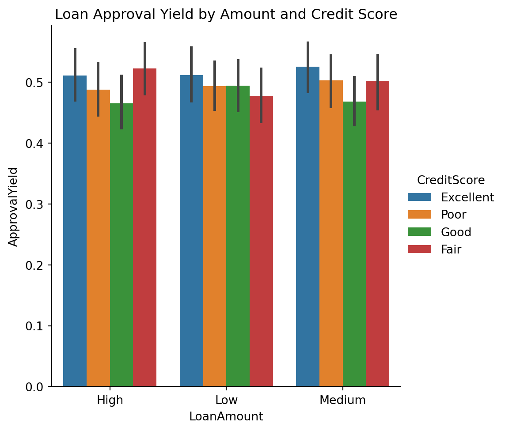

Associate Data Science Course in Python by DataCamp Inc
Published
March 2, 2025
1 Experimental Design in Python
1.1 Chapter 1: Experimental Design Preliminaries
Building knowledge in experimental design allows you to test hypotheses with best-practice analytical tools and quantify the risk of your work. You’ll begin your journey by setting the foundations of what experimental design is and different experimental design setups such as blocking and stratification. You’ll then learn and apply visual and analytical tests for normality in experimental data.
1.1.1 Chapter 1.1: Setting up experiments
Hi! Welcome to this course on experimental design in Python.
Experimental Design definition
Experimental design is the process in which we carry out research in an objective and controlled fashion. The purpose of this is to ensure we can make specific conclusions in reference to a hypothesis we have.
Because we use objective tools, we need to use quantified language. Instead of using words like ‘probably’, ‘likely’, and ‘small’ when noting our conclusions, we should use precise and quantified language. This often takes the form of noting the percentage risk on a Type I error in the conclusion. Recall that Type I errors occur when we incorrectly reject the null hypothesis when it is actually true. In this course, you’ll learn to design experiments and conduct statistical analyses such that you begin making precise statements about observed results and take informed actions as a result.
Why experimental design?
Experimental design is useful in many fields. Naturally, it is used in academia such as in medical research. It is also useful in many corporate contexts such as marketing and product analytics, which conduct lots of A/B tests. It is also used in agriculture and increasingly in government policy through the use of behavioral psychology experiments.
Some terminology…
Before we begin our first topic, let’s define some important terminology. Subjects are what we are experimenting on. It could be people, employees, or users on a website.
A treatment is some change given to one group of subjects. We could call that group the treatment group. The control group is not given any change. This could be a placebo group, for example.
Assigning subjects to groups
An important concept in experimental design is how to assign subjects to test groups. There are two ways we could do this. We could just split the dataset non-randomly into chunks and assign each chunk to a group. Or we could use random assignment to sample into our desired groups. Let’s look at each option using a DataFrame of 200 subjects’ heights where we want to split into two groups of 100 each.
Non-random assignment
Let’s try non-random assignment first. We can use .iloc[] to slice the first 100 rows from heights and assign to group1 and the next 100 rows into group2. We can use pandas’ describe method to check descriptive statistics of our groups. Concatenating the two results with pd.concat() and axis=1 will allow for easier comparison. These groups appear very different! Looking at the mean row, we can see there’s a 9cm difference. Because of the differences in these groups, it will be harder to confidently determine if any changes are due to the treatment intervention.
Random assignment
Let’s now try random assignment. We can use pandas’ sample method to create a sample of size n, or use the frac argument and specify a proportion of the dataset, between 0 and 1, to sample. We want two equally-sized groups, so we specify frac=0.5. Using n=100 would also work here. We also set the replace argument to False, so samples aren’t selected twice. The random_state argument allows the splits to be consistently reproduced. group2 can be made by dropping the ids in group1 from the overall DataFrame. Using the same comparison method we see much closer means.
Assignment summary
This demonstrates the importance of randomly assigning subjects to groups. It means we can attribute observed changes to treatment interventions rather than natural differences between the group. We can use pandas’ sample method to select randomly from a DataFrame, and then use pandas’ describe method to check differences in group assignment.
1.1.2 Exercise 1.1.1
Non-random assignment of subjects
An agricultural firm is conducting an experiment to measure how feeding sheep different types of grass affects their weight. They have asked for your help to properly set up the experiment. One of their managers has said you can perform the subject assignment by taking the top 250 rows from the DataFrame and that should be fine.
Your task is to use your analytical skills to demonstrate why this might not be a good idea. Assign the subjects to two groups using non-random assignment (the first 250 rows) and observe the differences in descriptive statistics.
You have received the DataFrame, weights which has a column containing the weight of the sheep and a unique id column.
1.1.3 Instructions
Use DataFrame slicing to put the first 250 rows of weights into group1_non_rand and the remaining into group2_non_rand.
Generate descriptive statistics of the two groups and concatenate them into a single DataFrame.
Print out to observe the differences.
Note: Due to non-availability of weights DataFrame, I had to generates mine myself, the proper code should have been this below.
import pandas as pdimport numpy as np# Generate 250 random weights for group1 between 39.07 and 65.10weights_group1 = np.random.uniform(39.07, 65.10, 250)# Generate 250 random weights for group2 between 65.10 and 95.82weights_group2 = np.random.uniform(65.10, 95.82, 250)# Create DataFrames for each groupgroup1_non_rand = pd.DataFrame({'id': range(1, 251),'weight': weights_group1})group2_non_rand = pd.DataFrame({'id': range(251, 501),'weight': weights_group2})# Combine the two groups into one DataFrameweights = pd.concat([group1_non_rand, group2_non_rand]).reset_index(drop=True)# Compare descriptive statistics of groupscompare_df_non_rand = pd.concat([group1_non_rand['weight'].describe(), group2_non_rand['weight'].describe()], axis=1)compare_df_non_rand.columns = ['group1', 'group2']# Print to assessprint(compare_df_non_rand)
group1 group2
count 250.000000 250.000000
mean 52.881443 80.928000
std 7.381485 8.988698
min 39.165461 65.224213
25% 47.169705 73.901509
50% 53.194238 80.949582
75% 58.828407 89.198278
max 65.097701 95.396556
Note
Wow! Those two datasets have a much greater difference in means. It may be that the dataset was sorted before you received it. Presenting these results to the firm will help them understand best-practice group assignment. Hopefully you can now work with them to set up the experiment properly.
1.1.4 Exercise 1.1.2
Random assignment of subjects
Having built trust from your last work with the agricultural firm, you have been given the task of properly setting up the experiment.
Use your knowledge of best practice experimental design set up to assign the sheep to two even groups of 250 each.
1.1.5 Instructions
Randomly select 250 subjects from the weights DataFrame into a new DataFrame group1 without replacement.
Put the remaining 250 subjects into group2.
Concatenate the descriptive statistics of your two newly created DataFrames.
Code
import pandas as pdimport numpy as np# Generate 250 random weights for group1 between 39.07 and 65.10weights_group1 = np.random.uniform(39.07, 65.10, 250)# Generate 250 random weights for group2 between 65.10 and 95.82weights_group2 = np.random.uniform(65.10, 95.82, 250)# Create DataFrames for each groupgroup1_rand = pd.DataFrame({'id': range(1, 251),'weight': weights_group1})group2_rand = pd.DataFrame({'id': range(251, 501),'weight': weights_group2})# Combine the two groups into one DataFrameweights = pd.concat([group1_rand, group2_rand]).reset_index(drop=True)# Randomly assign halfgroup1_random = weights.sample(frac=0.5, random_state=42, replace=False)# Create second assignmentgroup2_random = weights.drop(group1_random.index)# Compare assignmentscompare_df_random = pd.concat([group1_random['weight'].describe(), group2_random['weight'].describe()], axis=1)compare_df_random.columns = ['group1', 'group2']print(compare_df_random)
group1 group2
count 250.000000 250.000000
mean 64.451074 67.521437
std 16.515149 16.942613
min 39.165751 39.231547
25% 49.537486 53.044788
50% 64.135085 67.412082
75% 77.782505 81.534922
max 95.285790 95.738079
Note
While there are some differences in these datasets, you can clearly see the mean of the two sets are very close. This best-practice setup will ensure the experiment is on the right path from the beginning. Let’s continue building foundational experimental design skills by learning about experimental design setup.
1.1.6 Chapter 1.2: Experimental data setup
We’ve seen that randomization is often the best technique for setting up experimental data, but it isn’t always.
The problem with randomization
There are several scenarios where pure randomization can lead to undesirable outcomes. Firstly, when it results in uneven numbers of subjects in different groups, often seen more in smaller experiment sizes.
Covariates are variables that potentially affect experiment results but aren’t the primary focus. If covariates are highly variable or not equally distributed among groups, randomization might not produce balanced groups. This imbalance can lead to biased results. Overall these make it harder to see an effect from a treatment, as these issues may be driving an observed change.
Block randomization
A solution to our uneven problem is block randomization. This involves splitting into a block of size n first, then randomly splitting. This is what it looks like. Subjects are split into two groups, then randomly assigned to be Treatment (orange) or control (white). This fixes the uneven issue, and the smaller blocks give us more control over the allocation.
Our dataset
Let’s give block randomization a go on a dataset of 1000 members from an e-commerce site that contains variables for their average basket size in dollars, the average time spent on the website each day, and whether they are a power user. Power users spend an average of 40+ minutes on the website each day. There are 100 power users in these 1000 subjects.
Block randomization in Python
We can use pandas’ sample method to randomly assign subjects into two blocks. A block column has also been added to both DataFrames for convenience. This produces even block sizes, fixing the uneven issue, but let’s check for covariates.
Visualizing splits
A nice way of checking for potential covariate issues is with visualizations. We can use seaborn’s displot function to produce a kde (or kernal density) plot to visualize the distribution of the basket size, split by whether the user is a power user. There is quite a difference in the group distributions. It seems like the power_user variable could have an effect on basket size. When an effect could be because of a variable rather than the treatment, this is often called confounding. The covariate issue can be solved with stratified randomization.
Stratified randomization
Stratified randomization involves splitting based on a potentially confounding variable first, followed by randomization. This is what it may look like. Firstly, we split into two blocks (sometimes called strata) of power users, in green, and non-power users, in yellow. Then, inside the groups, randomly allocating to treatment or control. This fixes the uneven covariate issue, and can even be done for multiple covariates, but managing more strata does increase complexity.
Our first strata
Let’s stratify our power users. We separate them out first and label the block. We then sample half the power users to be in Treatment. The T_CLet’s stratify our power users. We separate them out first and label the block. We then sample half the power users to be in Treatment. The T_C column notes this status. We then place the remaining into control by dropping the subjects in the treatment group. column notes this status. We then place the remaining into control by dropping the subjects in the treatment group.
The second strata
For our other strata, we separate out non-power users first and label the block differently. The rest of the code is the same as before. We allocate half to treatment and control using the same column headers.
Confirming stratification
Let’s bring our work together by firstly concatenating the strata and groups. We can confirm our work using groupby and chaining the .size() method. This will show the number of power users in each block by their treatment or control status. We can see two blocks: one with all 100 power users and another with the other 900 users, split evenly into treatment and control groups.
1.1.7 Exercise 1.2.1
Blocking experimental data
You are working with a manufacturing firm that wants to conduct some experiments on worker productivity. Their dataset only contains 100 rows, so it’s important that experimental groups are balanced.
This sounds like a great opportunity to use your knowledge of blocking to assist them. They have provided a productivity_subjects DataFrame. Split the provided dataset into two even groups of 50 entries each.
Instructions
Randomly select 50 subjects from the productivity_subjects DataFrame into a new DataFrame block_1 without replacement.
Set a new column, block to 1 for the block_1 DataFrame.
Assign the remaining subjects to a DataFrame called block_2 and set the block column to 2 for this DataFrame.
Concatenate the blocks together into a single DataFrame, and print the count of each value in the block column to confirm the blocking worked.
Code
import pandas as pdimport numpy as np# Create DataFrame with 100 rows and subject_id ranging from 1 to 100productivity_subjects = pd.DataFrame({'subject_id': range(1, 101)})# Randomly assign halfblock_1 = productivity_subjects.sample(frac=0.5, random_state=42, replace=False)# Set the block columnblock_1['block'] =1# Create second assignment and labelblock_2 = productivity_subjects.drop(block_1.index)block_2['block'] =2# Concatenate and printproductivity_combined = pd.concat([block_1, block_2], axis=0)print(productivity_combined['block'].value_counts())
block
1 50
2 50
Name: count, dtype: int64
1.1.8 Exercise 1.2.2
Stratifying an experiment
You are working with a government organization that wants to undertake an experiment around how some particular government policies impact the net wealth of individuals in a number of areas.
They have approached you to help set up the experimental design. They have warned you that there is likely to be a small group of users who already have high net wealth and are concerned that this group might overshadow any experimental outcome observed. You know just what to do!
Use your knowledge of experimental design to undertake block randomization, stratifying by the high_wealth column in the provided wealth_data DataFrame. There are 2000 rows in the DataFrame with 200 high net wealth subjects (high_wealth is 1).
Instructions 1/3
Create the first block which contains all the high_wealth subjects and set the Block column to 1.
Create two groups from this block randomly assigning the high_wealth subjects to the Treatment (T) or control (C) group.
Repeat for the second block (all the not high_wealth subjects), setting the Block column to 2, and perform the group assignment (randomly assigning to Treatment (T) or control (C) group).
Concatenate the four groups created into wealth_data_stratified in order of creation (strata 1 group 1, strata 1 group 2, etc.)
Code
import pandas as pdimport numpy as np# Set random seed for reproducibilitynp.random.seed(42)# Number of rowsn_rows =2000# Number of high net wealth subjectsn_high_wealth =200# Create the 'high_wealth' columnhigh_wealth = np.zeros(n_rows, dtype=int)high_wealth[:n_high_wealth] =1# Shuffle the 'high_wealth' columnnp.random.shuffle(high_wealth)# Create the DataFramewealth_data = pd.DataFrame({'high_wealth': high_wealth})# Create the first blockstrata_1 = wealth_data[wealth_data['high_wealth'] ==1]strata_1['Block'] =1# Create two groups assigning to Treatment or Controlstrata_1_g1 = strata_1.sample(frac=0.5, replace=False)strata_1_g1['T_C'] ='T'strata_1_g2 = strata_1.drop(strata_1_g1.index)strata_1_g2['T_C'] ='C'# Create the second block and assign groupsstrata_2 = wealth_data[wealth_data['high_wealth'] ==0]strata_2['Block'] =2strata_2_g1 = strata_2.sample(frac=0.5, replace=False)strata_2_g1['T_C'] ='T'strata_2_g2 = strata_2.drop(strata_2_g1.index)strata_2_g2['T_C'] ='C'# Concatenate the grouping workwealth_data_stratified = pd.concat([strata_1_g1, strata_1_g2, strata_2_g1, strata_2_g2])print(wealth_data_stratified.groupby(['Block','T_C', 'high_wealth']).size())
Block T_C high_wealth
1 C 1 100
T 1 100
2 C 0 900
T 0 900
dtype: int64
Caution
You were able to split your data into different blocks and then randomly assign to treatment and control. You can clearly see two blocks, where the first block has half the high_wealth subjects split into treatment and control. The same is seen in the second block for the other subjects
1.1.9 Chapter 1.3: Normal data
Let’s review the concept of normal data and how it relates to experimental analysis.
The normal distribution
Normal data is drawn from a normal distribution, which has the familiar bell curve shape. The normal distribution is intrinsically linked to z-scores, which recall, is a standardized measure of how many standard deviations a value is from the population mean. The most common normal distribution used for z-scores has a mean of zero and a standard deviation of one. This answers questions such as ‘How many standard deviations is this point from the mean?’ and ‘What is the probability of obtaining this score?’.
Normal data and statistical tests
Normal data is an underlying assumption for many statistical tests, called parametric tests. There are also nonparametric tests that don’t assume normal data.
Normal, Z, and alpha
In hypothesis testing, alpha, or the significance level, is often closely linked to the normal distribution. For normal data, we can visually see the risk of error for a given significance level and compare that result to the p-value, which is related to the z-score. An alpha of 0.05 on a standard two-tailed test represents a small region in the tails. It means there is a 5% risk of rejecting the null hypothesis when it is actually true - a so-called Type I error.
Visualizing normal data
We can visually check data for normality using a kde (or kernel density) plot, available via Seaborn’s displot() function. On this salaries dataset, the data appears approximately normal.
QQ plots
A more statistically robust visual tool is a quantile-quantile, or QQ, plot. It plots the quantiles or sections of two distributions against each other. The qqplot function from statsmodels plots our data. Setting the dist argument to the normal distribution from scipy.stats compares our data against a standard normal distribution. If the distributions are similar, the dots in the QQ plot hug the line tightly. Our data again seems quite normal. Here is another example. The dots bow out at the ends, which means that the data is not very normal.
Tests for normality
There are also various numerical hypothesis tests for normality. The Shapiro-Wilk test is known to be good for small datasets. The D’Agostino K-squared test uses kurtosis and skewness to determine normality. These terms relate to the symmetry and size of a distribution’s tails, respectively. Anderson-Darling is another common test which returns a list of values, rather than just one so we can see normality at different levels of alpha. Each of these tests has a null hypothesis that the provided dataset is drawn from a normal distribution.
A Shapiro-Wilk test
Let’s run one of these tests, the Shapiro-Wilk test. We import it from scipy.stats, and set our alpha at 0.05. The function takes a series of values and returns a test statistic and p-value. The p-value is greater than alpha, so we have evidence our data that looked quite normal is normal. We fail to reject the null hypothesis and have evidence that the data sample is normal at the alpha level of 0.05.
An Anderson-Darling test
To implement an Anderson-Darling test, we provide data and set the dist argument to norm to test for normality. The result object contains a test statistic and a range of critical values and significance levels. To interpret, we check the test statistic against each critical value. If the test statistic is higher than the critical value, the null hypothesis is rejected at that particular significance level, and the data is not normal. 0.2748 is less than all the critical values, so we fail to reject the null hypothesis and suspect that the data is normal.
1.1.10 Exercise 1.3.1
Visual normality in an agricultural experiment
You have been contracted by an agricultural firm conducting an experiment on 50 chickens, divided into four groups, each fed a different diet. Weight measurements were taken every second day for 20 days.
You’ll analyze chicken_data to assess normality, which will determine the suitability of parametric statistical tests, beginning with a visual examination of the data distribution.
1.1.10.1 Instructions
Plot the distribution of the chickens’ weight using the kernel density estimation (KDE) to visualize normality.
Create a qq plot with a standard line of the chickens’ weight to assess normality visually.
Subset chicken_data for a 'Time' of 2, and plot the KDE of 'weight' from subset_data to check if data is normal across time.
Code
import pandas as pdimport numpy as npimport seaborn as snsimport matplotlib.pyplot as pltfrom statsmodels.graphics.gofplots import qqplotchicken_data = pd.read_csv('datasets/chick_weight.csv')# Plot the distribution of the chickens' weightsns.displot(data=chicken_data, x='weight', kind="kde")plt.show()# Plot the qq plot of the chickens' weightqqplot(data=chicken_data['weight'], line='s')plt.show()# Subset the data and plot the weight of the subsetsubset_data = chicken_data[chicken_data['Time'] ==2]sns.displot(data=subset_data, x='weight', kind="kde")plt.show()
1.1.11 Exercise 1.3.2
Analytical normality in an agricultural experiment
Carrying on from your previous work, your visual inspections of the data indicate it may not be a normal dataset overall, but that the initial time point may be.
Build on your previous work by using analytical methods to determine the normality of the dataset.
Instructions
Run a Shapiro-Wilk test of normality on the 'weight' column and print the test statistic and p-value.
Run an Anderson-Darling test for normality and print out the test statistic, significance levels, and critical values from the returned object.
Code
import pandas as pdfrom scipy.stats import shapirofrom scipy.stats import andersonimport numpy as npchicken_data = pd.read_csv('datasets/chick_weight.csv')# Run a Shapiro-Wilk normality test on the weight columntest_statistic, p_value = shapiro(chicken_data['weight'])print(f"p: {round(p_value, 4)} test stat: {round(test_statistic, 4)}")# Run the Anderson-Darling testresult = anderson(x= chicken_data['weight'], dist='norm')print(f"Test statistic: {round(result.statistic, 4)}")print(f"Significance Levels: {result.significance_level}")print(f"Critical Values: {result.critical_values}")
At a significance level of 0.05, does the Shapiro-Wilk test indicate the data is normally distributed? No
1.1.11.2 Question 4
Given the returned Anderson-Darling test result, what could you conclude at the 5% significance level
The critical value which matches the significance level of 5 is 0.781. When compared to the Anderson-Darling test statistic (12.5451), the critical value is much smaller and so we reject the null hypothesis and can conclude the data is unlikely to have been drawn from a normal distribution.
1.2 Chapter 2: Experimental Design Techniques
You’ll delve into sophisticated experimental design techniques, focusing on factorial designs, randomized block designs, and covariate adjustments. These methodologies are instrumental in enhancing the accuracy, efficiency, and interpretability of experimental results. Through a combination of theoretical insights and practical applications, you’ll acquire the skills needed to design, implement, and analyze complex experiments in various fields of research.
1.2.1 Chapter 2.1: Factorial designs: principles and applications
Welcome back! In this lesson, we’ll explore factorial designs.
Understanding factorial design
Factorial designs allow for the simultaneous examination of multiple variables. In this setup, every possible combination of factor levels is tested, which not only measures the direct effects of each factor but also the interactions between them. In the example shown of plant growth in different conditions, implementing a factorial design will mean that we can test the effect of different factors on plant growth, including light conditions and fertilizer type, simultaneously, and identify interactions between them. These interactions can illuminate complex dynamics that might be overlooked in simpler experimental setups.
1 Image Generated with DALL·E 3
Factorial design data example
To explain this concept further, we’ll work with this plant growth DataFrame. It has 120 rows and four columns: an identifier column, two factors, and one response/dependent variable. Both factors have two levels: Light_Condition can be Full Sunlight or Partial Shade, and Fertilizer_Type can be either Synthetic or Organic. The Growth_cm column is the numeric response, or dependent variable in the experiment.
Organizing data to visualize interactions
We next create a pivot table from the DataFrame using pandas’ pivot_table function. It aggregates the Growth_cm values by taking their mean for each combination of Light_Condition and Fertilizer_Type. The resulting table displays these average outcomes, with light values as rows and fertilizer values as columns, illustrating how the growth varies across different levels of the two factors. For example, the value 19.869 represents the average growth for the combination of Full Sunlight from Light_Condition and Synthetic from Fertilizer_Type.
Visualize interactions with heatmap
The Seaborn heatmap function paints a picture of how these factors interact, with the color intensity revealing the strength and direction of their interactions. Setting annot to True displays the numerical value of the cell, and ‘coolwarm’ is a color map that ranges from cooler, or bluer colors, to warmer or redder colors. Lastly, the format argument fmt is set to ‘g’ to avoid scientific notation.
Interpreting interactions
The variation in outcomes when changing levels within a factor indicates an interaction. For instance, the decrease from Organic to Synthetic fertilizer within Full Sunlight (from 20.602 to 19.869) contrasts with the modest change within Partial Shade, illustrating how outcomes differ based on factor levels. The differing changes in outcomes between Full Sunlight and Partial Shade across Fertilizer_Type suggest the factors interact, underscoring the need for nuanced strategies considering the interaction of factors.
Factorial designs vs. randomized block designs
Let’s conclude by comparing factorial designs to the randomized block design we saw earlier in the course, and that we’ll dive deeper into in the next video. Factorial designs investigate multiple treatments and their interactions to understand their combined effects on outcomes. They aim to unravel the effects and interactions of various factors, crucial for complex scenarios with multiple influencing variables. In factorial designs, units experience all treatment combinations, offering thorough exploration but requiring more subjects as treatments grow. Randomized block designs utilize blocks to group similar subjects, minimizing confounding impacts and clearer treatment effects. The focus of randomized block designs is on enhancing experimental precision by managing within-block variability, aiding in the detection of treatment differences. Randomized block designs assign one treatment per unit within blocks, ensuring each treatment’s presence in every block to control for block-related variance and bolster treatment effect assessments.
1.2.2 Exercise 2.1.1
Understanding marketing campaign effectiveness
Imagine you’re a digital marketer analyzing data from a recent campaign to understand what messaging style and time of day yield the highest conversions. This analysis is crucial for guiding future marketing strategies, ensuring that your messages reach potential customers when they’re most likely to engage. In this exercise, you’re working with a dataset giving the outcomes of different messaging styles ('Casual' versus 'Formal') and times of day ('Morning' versus 'Evening') on conversion rates, a common scenario in marketing data analysis.
Instructions
Create a pivot table with 'Messaging_Style' as the index and 'Time_of_Day' as the columns, computing the mean of Conversions.
Print this pivot table.
Code
import pandas as pdimport numpy as npmarketing_data = pd.read_feather('datasets/marketing_data.feather')# Create a pivot table for marketing campaign datamarketing_pivot = marketing_data.pivot_table( values='Conversions', index='Messaging_Style', columns='Time_of_Day', aggfunc='mean')# View the pivoted resultsprint(marketing_pivot)
!Notice that the mean conversion is highest for the'Formal'messaging style in the'Evening'time of day.
1.2.3 Exercise 2.1.2
Heatmap of campaign interactions
Visualizing data can often reveal patterns that are not immediately obvious. In the context of marketing, understanding how different factors interact and affect the success of a campaign is vital. By creating a heatmap of conversions based on messaging style and time of day, you can quickly identify which combinations perform best and which ones need reevaluation. This visual tool is invaluable for marketing teams looking to optimize their strategies for maximum impact.
Instructions
Visualize interactions between Messaging_Style and Time_of_Day with respect to conversions by creating an annotated cool-warm heatmap of marketing_pivot.
Code
import seaborn as snsimport matplotlib.pyplot as pltimport pandas as pdimport numpy as npmarketing_data = pd.read_feather('datasets/marketing_data.feather')# Create a pivot table for marketing campaign datamarketing_pivot = marketing_data.pivot_table( values='Conversions', index='Messaging_Style', columns='Time_of_Day', aggfunc='mean')# View the pivoted resultsprint(marketing_pivot)# Visualize interactions with a heatmapsns.heatmap(marketing_pivot, annot=True, cmap='coolwarm', fmt='g')plt.show()
Next, we’ll delve further into the concept of blocking in experimental design.
Understanding blocking
Blocking involves grouping experimental units, often with similar characteristics, to minimize variance within these groups. This ensures that each block, representing a specific level of the blocking factor, receives every treatment. This approach allows us to concentrate on the treatment effects while controlling for variance attributable to the blocking factor, thus improving the precision of our results.
Block design data example
For this athlete performance DataFrame of 200 rows, blocking is represented by Initial_Fitness_Level with categories of Beginner, Intermediate, and Advanced. Muscle_Gain_kg is a numeric response variable measured on participants for the year prior to blocks being assigned.
Implementing randomized block design
To implement a randomized block design, we’ll group the rows into blocks based on the Initial_Fitness_Level in this case, shuffle the rows within these blocks, and randomly assign a treatment. To shuffle the rows in each Initial_Fitness_Level block, we start with .groupby() on Initial_Fitness_Level. To shuffle each row in that block, we chain the .apply() method to the groupby, and pass it a lambda function that reads: for each group, denoted by x, we sample all rows with frac=1, effectively shuffling them. We reset the index to not have both an index and column called Block. The grouped data is ordered alphabetically by fitness level.
Implemented randomized blocks
Then, within each block, we assign exercise program treatments randomly using numpy.random.choice(). This method allows us to control for block effects while focusing on the differences caused by the treatments. Here is a sample of the implemented randomized block DataFrame with the treatment randomly applied within each block.
Visualizing treatment effects within blocks
A boxplot is an effective tool for visualizing the distribution of treatment effects across different blocks. By plotting the Muscle_Gain_kg variable versus the Initial_Fitness_Level, coloring by Treatment, we observe the central tendencies and variabilities within each block. Scanning this boxplot, we see similar median values throughout the blocks and treatments. The variability is a bit wider for some, though, such as Cardio for Advanced and Beginner.
ANOVA within blocks
We can use ANOVA to statistically check for these differences. Let’s set a significance level at 5% prior to reviewing our results. We group the DataFrame by the blocking column and then apply a lambda function to each group. Within the lambda function, we perform a one-way ANOVA test between the Muscle_Gain_kg values for each treatment within each block using f_oneway from scipy.stats. Finally, it returns the F-statistic and p-value for each block’s ANOVA test. Each of the p-values are above the alpha significance level of 5%. This gives evidence that significant differences don’t exist across treatments within blocks. This is an ideal goal when setting up randomized block design experiments.
Visualizing effects across blocks
We can also look for differences in the outcome across randomized blocks. Here, we do not break down further by treatment. These boxplots look similar, so we might guess that none of the blocks has a significantly different mean outcome compared to the others.
ANOVA between blocks
Next we compute the one-way ANOVA test across the blocks. It compares the Muscle_Gain_kg values for each block separately to assess whether there are significant differences in means among the blocks. The function f_oneway calculates the F-statistic and associated p-value, indicating the likelihood of observing the data if the null hypothesis of equal means across all blocks is true. A p-value greater than 0.05 supports what we saw with the boxplot - that there is no significant difference.
1.2.5 Exercise 2.2.1
Implementing a randomized block design
The manufacturing firm you worked with earlier is still interested in conducting some experiments on worker productivity. Previously, the two blocks were set randomly. While this can work, it can be better to group subjects based on similar characteristics.
The same employees are again loaded but this time in a DataFrame called productivity including 1200 other colleagues. It also includes a worker 'productivity_score' column based on units produced per hour. This column was binned into three groups to generate blocks based on similar productivity values. The firm would like to apply a new incentive program with three options ('Bonus', 'Profit Sharing' and 'Work from Home') throughout the firm with treatment applied randomly.
Instructions
Shuffle the blocks to create a new DataFrame called prod_df.
Reset the index so that block is not both an index and a column.
Randomly assign the three treatment values in the 'Treatment' column.
1.2.6 Exercise 2.2.2
Visualizing productivity within blocks by incentive
Continuing with the worker productivity example, you’ll explore if the productivity scores are distributed throughout the data as one would expect with random assignment of treatment. Note that this is a precautionary step, and the treatment and follow-up results on the impact of the three treatments is not done yet!
seaborn and matplotlib.pyplot as sns and plt respectively are loaded.
1.2.6.1 Instructions
Visualize the productivity scores within blocks by treatment using a boxplot with 'block' for x, 'productivity_score' for y, and 'Treatment' for hue.
1.2.7 Exercise 2.2.3
ANOVA within blocks of employees
Building on your previous analyses with the manufacturing firm, where worker productivity was examined across different blocks and an incentive program was introduced, you’re now delving deeper into the data. The firm, equipped with a more comprehensive dataset in the productivity DataFrame, including 1200 additional employees and their productivity_score, has structured the workforce into three blocks based on productivity levels. Each employee has been randomly assigned one of three incentive options: ‘Bonus’, ‘Profit Sharing’, or ‘Work from Home’.
Before assessing the full impact of these incentive treatments on productivity, it’s crucial to verify that the initial treatment assignment was indeed random and equitable across the different productivity blocks. This step ensures that any observed differences in productivity post-treatment can be confidently attributed to the incentive programs themselves, rather than pre-existing disparities in the blocks.
Instructions
Group prod_df by the appropriate column that represents different blocks in your data.
Use a lambda function to apply the ANOVA test within each block, specifying the lambda function’s argument.
For each treatment group within the blocks, filter prod_df based on the 'Treatment' column values and select the 'productivity_score' column.
Code
import pandas as pdimport numpy as npimport seaborn as snsimport matplotlib.pyplot as pltfrom scipy.stats import f_oneway# Set random seed for reproducibilitynp.random.seed(42)# Create the DataFramesubject_id = np.arange(1, 1301)productivity_score = np.random.uniform(1.1, 30.0, 1300)block = np.random.randint(1, 4, 1300)productivity = pd.DataFrame({'subject_id': subject_id,'productivity_score': productivity_score,'block': block})# Randomly assign workers to blocksprod_df = productivity.groupby('block').apply(lambda x: x.sample(frac=1))# Reset the indexprod_df = prod_df.reset_index(drop=True)# Assign treatment randomlyprod_df['Treatment'] = np.random.choice( ['Bonus', 'Profit Sharing', 'Work from Home'], size=len(prod_df))# Sample Boxplotsns.boxplot(x='block', y='productivity_score', hue='Treatment', data=prod_df)# Move the legend outside the plotplt.legend(title='Treatment', bbox_to_anchor=(1.05, 1), loc='upper left')# Show plotplt.show()# Perform the within blocks ANOVA, first grouping by blockwithin_block_anova = prod_df.groupby('block').apply(# Set functionlambda x: f_oneway(# Filter Treatment values based on outcome x[x['Treatment'] =='Bonus']['productivity_score'], x[x['Treatment'] =='Profit Sharing']['productivity_score'], x[x['Treatment'] =='Work from Home']['productivity_score']))print(within_block_anova)
An ANOVA analysis was performed to compare productivity scores across different blocks for the three treatment groups. The results show that all three p-values exceed the alpha threshold of 0.05, indicating no significant differences in productivity scores among the treatment groups within the blocks.
1.2.8 Chapter 2.3: Covariate adjustment in experimental design
Let’s now explore covariates in experimental design and analysis, and how they can be used to minimize confounding. We’ll also learn about ANCOVA, or analysis of covariance, for evaluating treatment effects while controlling for covariates.
Introduction to covariates
Recall that covariates are variables that are not of primary interest but are related to the outcome variable and can influence its analysis. Including covariates in statistical analyses is crucial for reducing confounding, which occurs when an external variable influences both the dependent variable and independent variable(s). By adjusting for covariates, researchers can isolate the effect of the independent variable on the outcome, minimizing the influence of confounders. Accounting for covariates in experimental design and analysis controls for variability that is not attributable to the primary variables being studied. This leads to more valid conclusions about the relationship between the independent and dependent variables, as the analysis better reflects the true effect by isolating it from the influence of covariates. Consider the investigation of a new teaching method’s effectiveness on student test scores. Here, the primary variables of interest are the teaching method (independent variable) and the student test scores (dependent variable). However, students’ prior subject knowledge serves as a crucial covariate because prior knowledge can significantly impact learning outcomes, yet it’s not the main focus of the study.
Experimental data example
Let’s bring back our plant growth data and set it to experimental data as the exp_data DataFrame, keeping Fertilizer_Type as treatment and Growth_cm as response.
Covariate data example
The covariate_data DataFrame also includes Plant_ID identifiers for each subject, again ranging from 1 to 120, ensuring each subject’s covariate data is matched with their experimental data. Watering_Days_Per_Week is another variable measured for each plant. Recall that covariates are additional variables potentially influencing the outcome and are included in analyses to control for their effects.
Combining experimental data with covariates
Combining the experimental with covariate data is a crucial step in adjusting for covariates. We use pandas’ merge function to combine DataFrames; we do this on the Plant_ID to ensure each that subject’s experimental and covariate data are aligned.
Adjusting for covariates
To adjust for covariates in our analysis, we employ ANCOVA, or analysis of covariance, using the ols model from statsmodels. This ols() function takes a formula that specifies the dependent and independent variables. Growth_cm is the dependent variable we’re interested in, which we want to model using the Fertilizer_Type, the categorical independent variable representing different groups in the experiment, and the potential covariate, Watering_Days_Per_Week, to control for its effects. The first portion of summary output provides details on the significance of the model; it show a large p-value here of 0.531, which implies a lack of support for covariates affecting the model.
Further exploring ANCOVA results
Looking at the second and third rows of this second portion of output from summary, we see that the factors and covariate each have large p-values of 0.760 and 0.275, concluding that each of them alone are not significant predictors of growth for this model.
Visualizing treatment effects with covariate adjustment
This seaborn lmplot shows treatment effects adjusted for the covariate. The regression lines for each treatment category offer a visual representation of how treatment effects trend across different levels of the covariate. We see that Organic remains relatively constant going from 1 watering to 7 Watering_Days_Per_Week. Synthetic shows an increase. The crossing regression lines suggest we may want to add an interaction term of Watering_Days_Per_Week by Fertilizer_Type in another model. Parallel lines would suggest a lack of interaction.
1.2.9 Exercise 2.3.1
Covariate adjustment with chick growth
Imagine studying in agricultural science the growth patterns of chicks under various dietary regimens. The data from this study sheds light on the intricate relationship between their respective diets and the consequent impact on their weight. This data includes weight measurements of chicks at different ages, allowing for an exploration of covariate adjustment. age serves as a covariate, potentially influencing the outcome variable: the weight of the chicks.
Instructions
Join the experimental and covariate data based on common column(s), and print this merged data.
Produce an ANCOVA predicting 'weight' based on 'Diet' and 'Time'.
Print a summary of the ANCOVA model.
Design an lmplot to see hue='Diet' effects on y='weight' adjusted for x='Time'.
Code
import pandas as pdimport numpy as npfrom statsmodels.formula.api import olsimport seaborn as snsimport matplotlib.pyplot as plt# Set random seed for reproducibilitynp.random.seed(42)# Generate 578 values for Chick (randomly sampled from 1 to 50)chick_values = np.random.randint(1, 51, size=578)# Generate 578 values for Diet (randomly sampled from 1 to 4)diet_values = np.random.randint(1, 5, size=578)# Generate 578 values for weight with approximate mean and stdweight_values = np.random.normal(loc=121.818, scale=71.072, size=578)# Ensure weights are within the specified rangeweight_values = np.clip(weight_values, 35, 373)# Create DataFrameexp_chick_data = pd.DataFrame({"Chick": chick_values,"Diet": diet_values,"weight": weight_values})# Generate 578 values for Chick (randomly sampled from 1 to 50)chick_values = np.random.randint(1, 51, size=578)# Generate 578 values for Time (normally distributed around mean 10.718 with std 6.758)time_values = np.random.normal(loc=10.718, scale=6.758, size=578)# Ensure Time values are within the specified range (0 to 21)time_values = np.clip(time_values, 0, 21).astype(int)# Create DataFramecov_chick_data = pd.DataFrame({"Chick": chick_values,"Time": time_values})# Join experimental and covariate datamerged_chick_data = pd.merge(exp_chick_data, cov_chick_data, on='Chick')# Print the merged dataprint(merged_chick_data)# Join experimental and covariate datamerged_chick_data = pd.merge(exp_chick_data, cov_chick_data, on='Chick')# Perform ANCOVA with Diet and Time as predictorsmodel = ols('weight ~ Diet + Time', data=merged_chick_data).fit()# Print a summary of the modelprint(model.summary())# Visualize Diet effects with Time adjustmentsns.lmplot(x='Time', y='weight', hue='Diet', data=merged_chick_data)plt.show()
1.3 Chapter 3: Analyzing Experimental Data: Statistical Tests and Power
Master statistical tests like t-tests, ANOVA, and Chi-Square, and dive deep into post-hoc analyses and power analysis essentials. Learn to select the right test, interpret p-values and errors, and skillfully conduct power analysis to determine sample and effect sizes, all while leveraging Python’s powerful libraries to bring your data insights to life.
1.3.1 Chapter 3.1. Choosing the right statistical test
We’ll now look into choosing the right statistical test for analyzing experimental data.
Selecting the right test
Just as choosing the right book or the right measurement tool for is vital to research, choosing the right statistical test is foundational to any data analysis. Understanding our dataset’s features and the hypotheses under examination is vital. It necessitates assessing the data types—categorical or continuous—their distributions, often assumed to be normal by many statistical tests, and the number of variables in the study. It’s essential to align the chosen statistical method with the dataset’s properties and the study’s goals to ensure accurate and dependable outcomes. In this chapter, we’ll explore how to apply t-tests, ANOVA, and Chi-Square tests, focusing on analyzing experimental data.
The dataset: athletic performance
We’ll work with a DataFrame called athletic_perf containing athletes’ performance data, focusing on the effects of different training programs and diets on athletic performance. Key variables are the type of training program, assigned diet, initial fitness level, and the observed performance increase as a percentage.
Independent samples t-test
An independent samples t-test is used to compare the means of two distinct groups to determine if there is a statistically significant difference between them. This test relies on the assumptions that the response data for both groups are normally distributed and have equal variances, ensuring the validity and reliability of the test results. We’ll use an alpha of 0.5 and compare the mean athletic performance improvements between two groups undergoing High-Intensity Interval Training (HIIT) and Endurance training by assigning their performance increases to group1 and group2. Next we call ttest_ind on group1 and group2 and retrieve the test statistics and p-value. A large p-value here leads us to conclude that there is no significant difference in the mean performance increase between the HIIT and Endurance groups.
One-way ANOVA
A one-way ANOVA test is employed to determine if there are statistically significant differences among the means of more than two groups. The one-way corresponds to ANOVA with a single independent variable, and it assumes that the variances among the groups are equal. For our example, we gather the athletic performance increase data for each training program type into a list of groups using a list comprehension. The f_oneway function from scipy.stats is then used to conduct the ANOVA test across these groups by unpacking the groups list using an asterisk. The relatively high P-value implies that, based on the provided data, we cannot confidently assert that different training programs lead to different mean increases in athletic performance.
Chi-square test of association
The Chi-square test of association is a statistical method used to assess whether there is a significant association between two categorical variables. Unlike many other statistical tests, the chi-square test does not require assumptions about the distribution of the data. To prepare for the test, we start by creating a contingency table using crosstab from pandas, which cross-tabulates athletes by their Training_Program and Diet_Type.
Chi-square test of association
The chi2_contingency function from scipy.stats is then employed to conduct the chi-square test on the contingency table. The large P-value suggests that any observed association between training programs and diet types is not statistically significant.
1.3.2 Exercise 3.1.1
Choosing the right test: petrochemicals
In a chemistry research lab, scientists are examining the efficiency of three well-known catalysts—Palladium (Pd), Platinum (Pt), and Nickel (Ni)—in facilitating a particular reaction. Each catalyst is used in a set of identical reactions under controlled conditions, and the time taken for each reaction to reach completion is meticulously recorded. Your goal is to compare the mean reaction times across the three catalyst groups to identify which catalyst, if any, has a significantly different reaction time.
Instructions
Use a list comprehension to filter into groups iterating over the catalyst_types and each of their 'Reaction_Time's.
Code
import numpy as npimport pandas as pdfrom scipy.stats import f_onewaychemical_reactions = pd.read_csv('datasets/chemical_reactions.csv')catalyst_types = ['Palladium', 'Platinum', 'Nickel']# Collect reaction times for each catalyst into a listgroups = [chemical_reactions[chemical_reactions['Catalyst'] == catalyst]['Reaction_Time'] for catalyst in catalyst_types]# Perform the one-way ANOVA across the three groupsf_stat, p_val = f_oneway(*groups)print(f"F-Statistic: {f_stat}, P-value: {p_val}")
Assume a significance level of \(\alpha = 0.01\). What is the appropriate conclusion to glean from the P-value in comparison with this \(\alpha\) value?
The P-value is substantially smaller than the \(\alpha\) value, indicating a significant difference in reaction times across the catalysts.
1.3.3 Exercise 3.1.2
Choosing the right test: human resources
In human resources, it’s essential to understand the relationships between different variables that might influence employee satisfaction or turnover. Consider a scenario where an HR department is interested in understanding the association between the department in which employees work and their participation in a new workplace wellness program. The HR team has compiled this data over the past two years and has asked you if there’s any significant association between an employee’s department and their enrolling in the wellness program.
Instructions
Create a contingency table comparing 'Department' and 'Wellness_Program_Status'.
Perform a chi-square test of association on the contingency table and print the p-value.
Code
import pandas as pdimport numpy as npfrom scipy.stats import chi2_contingencyhr_wellness = pd.read_csv('datasets/hr_wellness.csv')# Create a contingency tablecontingency_table = pd.crosstab( hr_wellness['Department'], hr_wellness['Wellness_Program_Status'])# Perform the chi-square test of associationchi2_stat, p_val, dof, expected = chi2_contingency(contingency_table)print(f"F-Statistic: {chi2_stat}, P-value: {p_val}")
Assume a significance level of 0.05. Given the P-value, what is the appropriate conclusion?
There’s no significant association between department and enrollment in the wellness program, as the P-value is larger than 0.05.
1.3.4 Exercise 3.1.3
Choosing the right test: finance
In the realm of finance, investment strategists are continually evaluating different approaches to maximize returns. Consider a scenario where a financial firm wishes to assess the effectiveness of two investment strategies: “Quantitative Analysis” and “Fundamental Analysis”. The firm has applied each strategy to a separate set of investment portfolios for a year and now asks you to compare the annual returns to determine if there is any difference in strategy returns by comparing the mean returns of the two groups.
Instructions
What type of hypothesis test should be performed in this scenario?
Possible answer: Independent samples t-test
Filter 'Strategy_Type' on 'Quantitative' to retrieve their 'Annual_Return' and do the same for 'Fundamental' strategies.
Complete for the two groups an independent samples t-test and print the p-value.
Code
import pandas as pdimport numpy as npfrom scipy.stats import ttest_indinvestment_returns = pd.read_csv('datasets/investment_returns.csv')# Separate the annual returns by strategy typequantitative_returns = investment_returns[investment_returns['Strategy_Type'] =='Quantitative']['Annual_Return']fundamental_returns = investment_returns[investment_returns['Strategy_Type'] =='Fundamental']['Annual_Return']# Perform the independent samples t-test between the two groupst_stat, p_val = ttest_ind(quantitative_returns, fundamental_returns)print(f"T-statistic : {t_stat}, P-value: {p_val}")
Assume a significance level of 0.1. What is the appropriate conclusion to glean from the P-value in comparison with this \(\alpha\) value?
The P-value is much smaller than \(\alpha\), suggesting a significant difference in returns between the two strategies.
1.3.5 Chapter 3.2: Post-hoc analysis following ANOVA
After conducting ANOVA, we often need to understand specific differences between groups. This is where post-hoc analysis comes in, providing detailed insights into pairwise comparisons.
When to use post-hoc tests
Post-hoc tests are pivotal when ANOVA reveals significant differences among groups. They allow us to pinpoint which specific pairs of groups differ, allowing us to peek behind the curtain to explore the inner workings of pairwise differences.
Key post-hoc methods
There are two common post-hoc methods: Tukey’s HSD, named after statistician John Tukey, which is known for its robustness in multiple comparisons. There’s also the Bonferroni correction, named after mathematician Carlo Bonferroni, which adjusts p-values to control for Type I errors. For broader comparisons, use Tukey’s HSD; Bonferroni is better for reducing false positives in more focused tests.
We’ll work with a dataset of marketing campaigns, examining the Click_Through_Rate for different Ad campaigns to identify differences and which strategy is most effective.
Data organization with pivot tables
Pivot tables in pandas can be extremely helpful for organizing data, especially before conducting post-hoc analysis. It provides a clear comparison of the mean Click_Through_Rates for each campaign type.
Performing ANOVA
We start with ANOVA to assess if there’s a significant difference in these Click_Through_Rates among the campaigns. This sets the stage for further analysis if significant differences are found. First, we specify the different campaign types. Then we create the groups using a list comprehension to extract the Click_Through_Rate for each Ad_Campaign. Next, we perform the ANOVA across the three campaign types, unpacking the groups using an asterisk, to compare their mean click-through rates. The very small P-value here indicates significant differences in these means.
Tukey’s HSD test
If ANOVA indicates significant differences, Tukey’s HSD test helps us understand exactly which campaigns differ. The pairwise_tukeyhsd function from statsmodels.stats takes arguments for the continuous response variable, Click_Through_Rate in this case, the categorical variable with more than two groups, Ad_Campaign, and \(\alpha\). To interpret the results of this table, we focus on the meandiff, p-adj (adjusted P-value), and reject columns. For the first row, Loyalty Reward versus New Arrival, the mean difference is 0.2211, with a p-value less than 0.05, indicating that the Loyalty Reward group has a significantly higher mean than the New Arrival group. For Loyalty Reward versus Seasonal Discount, on row 2, the mean difference is -0.2738. With a p-value less than 0.05, it suggests that the Loyalty Reward group has a significantly lower mean than the Seasonal Discount group. Lastly, for New Arrival versus Seasonal Discount, the mean difference is -0.4949, with a p-value less than 0.05, indicating that the New Arrival group has a significantly lower mean than the Seasonal Discount group.
Bonferroni correction set-up
The Bonferroni correction is a stringent method to adjust p-values when conducting multiple pairwise comparisons, effectively reducing the chances of a Type I error. A little more data preparation is required before applying the Bonferroni correction. We begin by creating an empty P-values list. Then, we lay out a list of tuples containing the pairwise comparisons that we will iterate over. Next, we iterate over the tuples in comparisons, using the tuple elements to extract the Click_Through_Rate for both groups. We run ttest_ind on the click through rates in a pairwise fashion, and append the p-values to our list.
Performing Bonferroni correction
Now we apply the Bonferroni correction using the multipletests function. The resulting p-values for the three comparisons are all extremely small. This again provides evidence that each of the three groups have significant click through rate differences.
1.3.6 Exercise 3.2.1
Anxiety treatments ANOVA
Psychologists conducted a study to compare the effectiveness of three types of therapy on reducing anxiety levels: Cognitive Behavioral Therapy (CBT), Dialectical Behavior Therapy (DBT), and Acceptance and Commitment Therapy (ACT). Participants were randomly assigned to one of the three therapy groups, and their anxiety levels were measured before and after the therapy sessions. The psychologists have asked you to determine if there are any significant differences in the effectiveness of these therapies.
Instructions
Create a pivot table to calculate the mean 'Anxiety_Reduction' value across groups of 'Therapy_Type' in this data.
Filter groups of therapy types and their 'Anxiety_Reduction' values by first creating a list of the three therapy types: 'CBT', 'DBT', and 'ACT'.
Code
import numpy as npimport pandas as pdfrom scipy.stats import f_oneway# Set random seed for reproducibilitynp.random.seed(4)# Define therapy typestherapy_types = ['CBT', 'DBT', 'ACT']# Generate random therapy assignmentstherapy_assignments = np.random.choice(therapy_types, size=1422, p=[0.34, 0.33, 0.33])# Generate Anxiety Reduction values following a normal distribution with given mean and stddanxiety_reduction = np.random.normal(loc=15.201, scale=4.938, size=1422)# Ensure min and max are within expected rangedanxiety_reduction = np.clip(danxiety_reduction, -1.206, 34.264)# Create DataFrametherapy_outcomes = pd.DataFrame({'Therapy_Type': therapy_assignments,'Anxiety_Reduction': danxiety_reduction})# Print summary statisticsprint(therapy_outcomes.describe())# Create pivot tablepivot_table = therapy_outcomes.pivot_table( values='Anxiety_Reduction', index='Therapy_Type', aggfunc='mean')# Pivot to view the mean anxiety reduction for each therapyprint(pivot_table)# Create groups to prepare the data for ANOVAtherapy_types = ['CBT', 'DBT', 'ACT']groups = [therapy_outcomes[therapy_outcomes['Therapy_Type'] == therapy]['Anxiety_Reduction'] for therapy in therapy_types]# Conduct ANOVAf_stat, p_val = f_oneway(*groups)print(p_val)
Anxiety_Reduction
count 1422.000000
mean 15.224009
std 4.781342
min 0.723195
25% 11.855642
50% 15.360508
75% 18.602824
max 34.264000
Anxiety_Reduction
Therapy_Type
ACT 15.653751
CBT 14.701516
DBT 15.310404
0.007803856353541549
Caution
By analyzing the data with ANOVA, you’ve taken an important step in comparing the effectiveness of different therapies. Assuming an \(\alpha\) of 0.05, the P-value indicates significant differences in therapy effectiveness.
1.3.7 Exercise 3.2.2
Applying Tukey’s HSD
Following the ANOVA analysis which suggested significant differences in the effectiveness of the three types of therapy, the psychologists are keen to delve deeper. They wish for you to explain exactly which therapy types differ from each other in terms of reducing anxiety levels. This is where Tukey’s Honest Significant Difference (HSD) test comes into play. It’s a post-hoc test used to make pairwise comparisons between group means after an ANOVA has shown a significant difference. Tukey’s HSD test helps in identifying specific pairs of groups that have significant differences in their means.
Instructions
At a significance level of 0.05, perform Tukey’s HSD test to compare the mean anxiety reduction across the three therapy groups.
Code
import numpy as npimport pandas as pdfrom scipy.stats import f_onewayfrom statsmodels.stats.multicomp import pairwise_tukeyhsd# Set random seed for reproducibilitynp.random.seed(4)# Define therapy typestherapy_types = ['CBT', 'DBT', 'ACT']# Generate random therapy assignmentstherapy_assignments = np.random.choice(therapy_types, size=1422, p=[0.34, 0.33, 0.33])# Generate Anxiety Reduction values following a normal distribution with given mean and stddanxiety_reduction = np.random.normal(loc=15.201, scale=4.938, size=1422)# Ensure min and max are within expected rangedanxiety_reduction = np.clip(danxiety_reduction, -1.206, 34.264)# Create DataFrametherapy_outcomes = pd.DataFrame({'Therapy_Type': therapy_assignments,'Anxiety_Reduction': danxiety_reduction})# Create pivot tablepivot_table = therapy_outcomes.pivot_table( values='Anxiety_Reduction', index='Therapy_Type', aggfunc='mean')# Pivot to view the mean anxiety reduction for each therapyprint(pivot_table)# Create groups to prepare the data for ANOVAtherapy_types = ['CBT', 'DBT', 'ACT']groups = [therapy_outcomes[therapy_outcomes['Therapy_Type'] == therapy]['Anxiety_Reduction'] for therapy in therapy_types]# Conduct ANOVAf_stat, p_val = f_oneway(*groups)print(p_val)# Perform Tukey's HSD testtukey_results = pairwise_tukeyhsd( therapy_outcomes['Anxiety_Reduction'], therapy_outcomes['Therapy_Type'], alpha=0.05)print(tukey_results)
The Tukey HSD test provided clear insights into which therapy types significantly differ in reducing anxiety. These findings can guide psychologists in refining treatment approaches. Did you catch that (ACT and DBT) and (CBT and DBT)don’t differ significantly from this experiment?
1.3.8 Exercise 3.2.3
Applying Bonferoni correction
After identifying significant differences between therapy groups with Tukey’s HSD, we want to confirm our findings with the Bonferroni correction. The Bonferroni correction is a conservative statistical adjustment used to counteract the problem of multiple comparisons. It reduces the chance of obtaining false-positive results by adjusting the significance level. In the context of your study on the effectiveness of CBT, DBT, and ACT, applying the Bonferroni correction will help ensure that the significant differences you observe between therapy groups are not due to chance.
Instructions
Conduct independent t-tests between all pairs of therapy groups in therapy_pairs and append the p-values (p_val) to the p_values list.
Apply the Bonferroni correction to adjust the p-values from the multiple tests and print them.
Code
import numpy as npimport pandas as pdfrom scipy.stats import ttest_indfrom statsmodels.sandbox.stats.multicomp import multipletests# Set random seed for reproducibilitynp.random.seed(4)# Define therapy typestherapy_types = ['CBT', 'DBT', 'ACT']# Generate random therapy assignmentstherapy_assignments = np.random.choice(therapy_types, size=1422, p=[0.34, 0.33, 0.33])# Generate Anxiety Reduction values following a normal distribution with given mean and stddanxiety_reduction = np.random.normal(loc=15.201, scale=4.938, size=1422)# Ensure min and max are within expected rangedanxiety_reduction = np.clip(danxiety_reduction, -1.206, 34.264)# Create DataFrametherapy_outcomes = pd.DataFrame({'Therapy_Type': therapy_assignments,'Anxiety_Reduction': danxiety_reduction})p_values = []therapy_pairs = [('CBT', 'DBT'), ('CBT', 'ACT'), ('DBT', 'ACT')]# Conduct t-tests and collect P-valuesfor pair in therapy_pairs: group1 = therapy_outcomes[therapy_outcomes['Therapy_Type'] == pair[0]]['Anxiety_Reduction'] group2 = therapy_outcomes[therapy_outcomes['Therapy_Type'] == pair[1]]['Anxiety_Reduction'] t_stat, p_val = ttest_ind(group1, group2) p_values.append(p_val)# Apply Bonferroni correctionprint(multipletests(p_values, alpha=0.05, method='bonferroni')[1])
[0.15515276 0.00483525 0.83050552]
Note
The Bonferroni correction applied to adjust for the P-values for multiple comparisons. This step is critical to control for Type I error, ensuring the reliability of my findings. Here again it is obvious that (ACT and DBT) and (CBT and DBT) don’t differ significantly from this experiment due to the corrected P-value of 1.
1.3.9 Chapter 3.3: P-values, alpha, and errors
In this lesson, we’ll deepen our understanding of p-values, alpha levels, and experimental errors. This will prepare us for the next video, where we’ll tackle a key concept in experimental design called power analysis!
P-values and alpha
P-values and alpha can be viewed as a game. Think of conducting a scientific experiment where we are trying to determine whether a certain strategy (our hypothesis) leads to winning (or a significant result) more often than just by chance. P-values help us understand the likelihood of observing our data if the null hypothesis was true. That is they serve as the scoreboard of the game. Setting an \(\alpha\) level, often 0.05, allows us to determine the threshold at which we consider our results statistically significant, akin to setting the rules of a game before playing. Alpha is like establishing a rule for what counts as a “remarkable” win in this game. If your P-value is below this alpha level, it’s as if we’ve achieved a high score or a remarkable performance in the game, leading us to conclude that our strategy (the alternative hypothesis) might indeed be effective, and it’s not just the luck of the draw.
The dataset: crop yields
We’ll work with a dataset of crop yields from different fields, where each field was treated with either organic or synthetic fertilizer. Our goal is to analyze this data to determine if there’s a significant difference in crop yields between the two fertilizer types.
Visualizing the data
It’s helpful to visualize the crop yields for each fertilizer type. By plotting the kernel density estimates (kde), we get a sense of how the two fertilizers might differ in terms of their effect on crop yields and whether there’s an overlap between their effects. It appears that Organic tends to produce a higher yield than Synthetic with some overlap.
Conducting an independent samples t-test
We set our alpha to the standard five-percent level. To compare the effectiveness of organic versus synthetic fertilizers, we perform a t-test on the crop yields from the two groups. The p-value is smaller than alpha suggesting that fertilizer type has a statistically significant impact on crop yield.
Exploring experimental errors
In experimental design, we encounter two main types of errors. Type I errors occur when we incorrectly reject a true null hypothesis, akin to a false alarm. Type II errors happen when we fail to reject a false null hypothesis, similar to a missed detection.
More on alpha
Alpha, or the significance level, is crucial in hypothesis testing; it indicates the probability of a Type I error—rejecting a true null hypothesis. Common \(\alpha\) levels include 0.05, 0.01, and 0.10, representing risks of 5%, 1%, and 10%, respectively, for such errors. Selecting an alpha hinges on the study’s context and a balance between tolerating a Type I error and the risk of overlooking a true effect, known as a Type II error. The choice should align with the study’s goals and the implications of potential errors. Conventionally, 0.05 is the standard for statistical significance across many disciplines. For more rigorous scrutiny, particularly where the cost of a Type I error is high, an \(\alpha\) of 0.01 is preferred. In preliminary studies, where a higher error tolerance is permissible, an \(\alpha\) of 0.10 may be utilized, allowing for a broader exploration of potential effects with subsequent validation through more stringent testing.
1.3.10 Exercise 3.3.1
Analyzing toy durability
In product development within the toy industry, it’s crucial to understand the durability of toys, particularly when comparing educational toys to recreational ones. Durability can significantly impact customer satisfaction and repeat business. Researchers in a toy manufacturing company have asked you to conduct the analysis of a study comparing the durability of educational toys versus recreational toys. The toy_durability DataFrame contains the results of these tests, with durability scores assigned based on rigorous testing protocols.
Instructions
Calculate the mean 'Durability_Score' for both 'Educational' and 'Recreational' toys using a pivot table.
Perform an independent samples t-test to compare the durability of 'Educational' and ‘Recreational’ toys by first separating durability scores by Toy_Type.
Code
import numpy as npimport pandas as pdfrom scipy.stats import ttest_ind# Set random seed for reproducibilitynp.random.seed(36)# Generate Toy_Type column with approximately equal distributiontoy_types = np.random.choice(['Educational', 'Recreational'], size=1900)# Generate Durability_Score based on the means for each Toy_Typedurability_scores = np.where( toy_types =='Educational', np.random.normal(loc=80.101, scale=6.0, size=1900), np.random.normal(loc=79.461, scale=6.0, size=1900))# Create the DataFrametoy_durability = pd.DataFrame({'Toy_Type': toy_types, 'Durability_Score': durability_scores})# Compute the pivot tablemean_durability = toy_durability.pivot_table(values='Durability_Score', index='Toy_Type', aggfunc=np.mean)print(mean_durability)# Perform t-testeducational_durability_scores = toy_durability[toy_durability['Toy_Type'] =='Educational']['Durability_Score']recreational_durability_scores = toy_durability[toy_durability['Toy_Type'] =='Recreational']['Durability_Score']t_stat, p_val = ttest_ind(educational_durability_scores, recreational_durability_scores)print("P-value:", p_val)
The P-value suggests that there’s a statistically significant difference in durability between 'Educational' and 'Recreational' toys, assuming an alpha of 0.05. This insight could be crucial for product development and marketing strategies.
1.3.11 Exercise 3.3.2
Visualizing durability differences
Following the analysis of toy durability, the research team is interested in you visualizing the distribution of durability scores for both Educational and Recreational toys. Such visualizations can offer intuitive insights into the data, potentially highlighting the range and variability of scores within each category. This step is essential for presenting findings to non-technical stakeholders and guiding further product development decisions.
Instructions
Visualize the distribution of 'Durability_Score' for Educational and Recreational toys using a Kernel Density Estimate (KDE) plot, highlighting differences by using the 'Toy_Type' column to color the distributions differently.
Code
import numpy as npimport pandas as pdimport seaborn as snsimport matplotlib.pyplot as plt# Set random seed for reproducibilitynp.random.seed(36)# Generate Toy_Type column with approximately equal distributiontoy_types = np.random.choice(['Educational', 'Recreational'], size=1900)# Generate Durability_Score based on the means for each Toy_Typedurability_scores = np.where( toy_types =='Educational', np.random.normal(loc=80.101, scale=6.0, size=1900), np.random.normal(loc=79.461, scale=6.0, size=1900))# Create the DataFrametoy_durability = pd.DataFrame({'Toy_Type': toy_types, 'Durability_Score': durability_scores})# Visualize the distribution of Durability_Score for each Toy_Typesns.displot(data=toy_durability, x="Durability_Score", hue="Toy_Type", kind="kde")plt.title('Durability Score Distribution by Toy Type')plt.xlabel('Durability Score')plt.ylabel('Density')plt.show()
1.3.12 Chapter 3.4: Power analysis: sample and effect size
We now dive into the intricacies of power analysis, focusing on understanding effect size and how it influences sample size.
A primer on effect size
Effect size quantifies the magnitude of the difference between groups, beyond just noting if the difference is statistically significant. Cohen’s d is a commonly used measure, calculated as the difference in means divided by a pooled standard deviation.
The dataset: video game engagement
A video game company conducted an experiment with sixty participants to understand player engagement across two game genres: Action and Puzzle. They recorded the average number of hours players spent engaged to assess which type tends to captivate players more effectively.
Calculating power overview
Power analysis revolves around the probability that our test will correctly reject a false null hypothesis. This corresponds to identifying a true effect, avoiding a Type II error. A type II error is denoted as beta, so power is one minus beta and it ranges from zero to one, where one is certainty in our ability to detect a true effect. To calculate power, we first assume an effect size. Here we choose a value of 1, derived from historical data comparing the engagement scores of video game genres. We can also use our sample data to make an estimate of the effect size, but traditionally power analysis is done prior to the data collection. This can also help us determine how big of a sample size we should use in our study. We initialize the power object and call the .solve_power() method, using a sample size for how many video game players were assessed in either group (30), our assumed effect size, and our alpha of 0.05. This high power tells us the likelihood that our test will detect a significant result, given our effect size and sample size.
Cohen’s d formulation
To calculate Cohen’s d as an effect size, we define a function. Its two inputs are numeric data corresponding to the two groups from our sample data. We calculate the difference in the means of the two groups, their sample sizes, and their variances. Next, we determine a pooled standard deviation using this information. Lastly, Cohen’s d is the difference in means divided by the pooled standard deviation.
Cohen’s d for video game data
To apply this to the video game data, we first split the data into two groups based on the genre. Then we apply our function to get the effect size. The result here is near the theoretical result of 1 we assumed earlier.
Understanding sample size and power
Balancing the need for sufficient power with practical constraints on sample size is a fundamental aspect of planning a study, such as comparing engagement times across different video game genres. A larger sample size can enhance an experiment’s power, improving the likelihood of detecting a true effect.
Let’s contextualize this within our video game study. Assuming our calculated value for Cohen’s d engagement time between game genres, we calculate the sample size needed for each group to achieve 99% power with an alpha of 0.05 and equally-sized groups with a ratio of 1. This calculation is pivotal in ensuring our study is adequately powered to detect meaningful differences in player engagement across genres. Assuming we have an effect size of around 1.2, we would need at least 28 participants in each group to achieve a power of 99%. Recall we collected 30 participants, so we can feel confident about our experiment’s power.
Visualizing sample size requirements
We next build a visualization illustrating the relationship between effect size measured as Cohen’s d and required sample size for our video game study, by plotting varying effect sizes against required sample sizes. As effect size increases, the required sample size for each group decreases, highlighting the importance of understanding the expected magnitude of differences when planning a study.
1.3.13 Exercise 3.4.1
Estimating required sample size for energy study
In the energy sector, researchers are often tasked with evaluating the effectiveness of new technologies or initiatives to enhance energy efficiency or reduce consumption. A study is being designed to compare the impact of two energy-saving measures: “Smart Thermostats” and “LED Lighting”. To ensure the study has sufficient power to detect a meaningful difference in energy savings between these two measures, you’ll conduct a power analysis.
Instructions
Instantiate a TTestIndPower object.
Conduct the power analysis to estimate the required sample size for each group (Smart Thermostats and LED Lighting) to achieve a power of 0.9, assuming a moderate effect size (Cohen’s d = 0.5) and an alpha of 0.05 with an equal sized groups.
import numpy as np
import pandas as pd
from statsmodels.stats.power import TTestIndPower
# Instantiate a TTestIndPower object
power_analysis = TTestIndPower()
# Conduct a power analysis to determine the required sample size
required_n = power_analysis.solve_power(
effect_size=0.5,
alpha=0.05,
power=0.9,
ratio=1)
print(required_n)
<script.py> output:
85.03128688801092
By conducting a power analysis, you’ve determined that approximately 85 participants are required in each group to achieve a power of 0.9, assuming an Cohen’s d effect size of 0.5. This information is crucial for planning a sufficiently powered study to compare the energy-saving effectiveness of Smart Thermostats versus LED Lighting.
1.4 Chapter 4: Advanced Insights from Experimental Complexity
Hop into the complexities of experimental data analysis. Learn to synthesize insights using pandas, address data issues like heteroscedasticity with scipy.stats, and apply nonparametric tests like Mann-Whitney U. Learn additional techniques for transforming, visualizing, and interpreting complex data, enhancing your ability to conduct robust analyses in various experimental settings.
1.4.1 Chapter 4.1: Synthesizing insights from complex experiments
We’ll next explore how to synthesize insights from complex experiments, focusing on integrating data across different experimental factors to derive meaningful conclusions.
Manufacturing yield data
We’ll work with manufacturing_yield dataset, which captures how factors like material type, production speed, and temperature settings impact the yield in our experiment. The BatchID column stores a unique identifier for each item in the data. Determining whether these factors have an impact on the yield strength can be used to optimize manufacturing outcomes.
manufacturing_yield
BatchID MaterialType ProductionSpeed TemperatureSetting YieldStrength
39 Polymer Medium Optimal 58.83
195 Metal High High 51.29
462 Polymer High Optimal 55.15
696 Composite Medium Low 50.27
142 Composite High Low 57.62
Manufacturing quality data
A separate experiment was also done on the same items exploring the impact of production speed on the quality of the product as the response. This data is stored in the manufacturing_quality DataFrame.
manufacturing_quality
BatchID ProductionSpeed ProductQuality
149 Low 93.87
739 High 93.35
617 Medium 90.45
131 High 90.26
684 Low 91.62
Merging strategy
We can use the pandas merge method to seamlessly integrate the manufacturing_yield and manufacturing_quality datasets, joining on the BatchID and ProductionSpeed columns so associated data is connected together. We can now explore this data in a variety of ways, looking for relationships in the data with the two response columns of yield and quality.
merged_manufacturing = pd.merge(manufacturing_yield, manufacturing_quality, on=['BatchID', 'ProductionSpeed'])
print(merged_manufacturing)
BatchID MaterialType ProductionSpeed TemperatureSetting YieldStrength ProductQuality
1 Metal Low High 57.32 91.19
5 Composite Medium Optimal 51.82 90.20
7 Polymer Low High 56.12 91.66
8 Composite High Optimal 50.91 93.05
11 Polymer Low High 50.13 92.31
Side-by-side bar graph
We can showcase potential interactions between MaterialType and ProductionSpeed on YieldStrength using Seaborn’s catplot function. Yield is on the vertical axis broken down by material on the horizontal, and the bars are colored by ProductionSpeed. It seems that Polymer tends to have the highest yield followed by Composite and then by Metal. Production speed has a negative impact on yield across each of the materials as well with slower production leading to better yield than faster production.
import seaborn as sns
sns.catplot(x='MaterialType', y='YieldStrength', hue='ProductionSpeed', kind='bar',
data=merged_manufacturing)
image
Three variable scatterplot
To further explore relationships in the data, we can look to see how both of the response variables relate conditioned on ProductionSpeed. We use a scatterplot with each of the response variables on the axes colored by speed. The green High values tend to be lower in each, with the orange Medium values more near the center of the plot, and the low ProductionSpeed points tending to be near the upper right of the plot.
sns.relplot(x='YieldStrength', y='ProductQuality', hue='ProductionSpeed',
kind='scatter', data=merged_manufacturing)
plt.title('Yield Strength vs. Product Quality by Production Speed')
Communicating data to technical audiences
Now that we’ve seen some visualizations on complex experimental data, let’s focus on how we can tailor our approach when presenting to technical audiences. Crafting data narratives for this group involves integrating detailed statistical analysis, such as p-values, test statistics, and significance levels, into our stories. This not only enriches the narrative but also supports the validity of our findings with concrete evidence. Additionally, visualizing complex data for technical stakeholders should go beyond basic charts and include advanced visualizations like heat maps, scatter plots using multiple colors, and projection lines. These types of visuals can more precisely demonstrate relationships and trends within the data, catering to an audience that values depth and detail in data exploration.
Engaging non-technical audiences with data
Moving on to non-technical audiences, our focus shifts towards simplifying the insights derived from our data. It’s crucial to distill complex information into its essence, presenting it in a clear and straightforward manner. Use foundational visualizations like bar graphs and line charts, which are easier to interpret and highlight key points without the need for statistical jargon. When preparing presentations for a non-technical crowd, ensure that the content is audience-centric by highlighting why the data matters to them in practical terms. Connect the data insights to real-world applications and outcomes that resonate with their interests and professional challenges. This approach not only maintains relevance but also enhances engagement by aligning the presentation contents with their level of expertise and need for application rather than detailed analysis.
1.4.2 Exercise 4.1.1
Visualizing loan approval yield
In the realm of financial services, understanding the factors that influence loan approval rates is crucial for both lenders and borrowers. A financial institution has conducted a study and collected data on loan applications, detailing the amount requested, the applicant’s credit score, employment status, and the ultimate yield of the approval process. This rich dataset offers a window into the nuanced dynamics at play in loan decision-making. You have been asked to dive into the loan_approval_yield dataset to understand how loan amounts and credit scores influence approval yields.
Instructions
Create a side-by-side bar graph, setting the x-axis to 'LoanAmount', the y-axis to 'ApprovalYield', and differentiating the bars with hues for 'CreditScore'.
Question: What does the analysis of approval yields across different credit scores and loan amounts reveal?
The data shows that Poor credit scores tend to have similar approval yields across various loan amounts, while Good credit scores exhibit more variability, reflecting different lending criteria based on the loan size.
Code
import pandas as pdimport seaborn as snsimport matplotlib.pyplot as pltloan_approval_yield = pd.read_csv('datasets/loan_approval_yield.csv')# Use Seaborn to create the bar graphsns.catplot(x="LoanAmount", y="ApprovalYield", hue="CreditScore", kind="bar", data=loan_approval_yield)plt.title("Loan Approval Yield by Amount and Credit Score")plt.show()

1.4.3 Exercise 4.1.2
Exploring customer satisfaction
Merging datasets is a crucial skill in data analysis, especially when dealing with related data from different sources. You’re working on a project for a financial institution to understand the relationship between loan approval rates and customer satisfaction. Two separate studies have been conducted: one focusing on loan approval yield based on various factors, and another on customer satisfaction under different conditions. Your task is to analyze how approval yield correlates with customer satisfaction, considering another variable such as interest rates.
Instructions
Merge loan_approval_yield with customer_satisfaction.
Create a scatter plot to compare 'SatisfactionQuality' versus 'ApprovalYield', coloring the points by 'InterestRate'.
Code
import pandas as pdimport seaborn as snsimport matplotlib.pyplot as pltloan_approval_yield = pd.read_csv('datasets/loan_approval_yield.csv')customer_satisfaction = pd.read_csv('datasets/customer_satisfaction.csv')# Merge the two datasetsmerged_data = pd.merge(loan_approval_yield, customer_satisfaction, on='ApplicationID')# Use Seaborn to create the scatter plotsns.relplot(x="ApprovalYield", y="SatisfactionQuality", hue="InterestRate", kind="scatter", data=merged_data)plt.title("Satisfaction Quality by Approval Yield and Interest Rate")plt.show()
Question: What does the scatterplot of Customer Satisfaction versus Approval Yield, including Interest Rate as a variable, indicate about their relationship in the experimental data?
There isn’t a strong relationship between Customer Satisfaction and Approval Yield in this experimental data. The resulting scatterplot looks similar to white noise scattered all about even when including Interest Rate
1.4.4 Chapter 4.2: Addressing complexities in experimental data
Next, we will look into addressing complexities in experimental data, focusing on identifying and mitigating issues like interactions, confounding variables, and heteroscedasticity.
Geological data
The mineral_rocks dataset encompasses 300 rock samples, detailing attributes like rock type, geographical location, mineral hardness, and rock porosity. Each entry in the dataset represents a unique sample, identified by its SampleID, and characterized by varying levels of MineralHardness and RockPorosity across different rock types and locations. Understanding the distribution and interactions within this data is critical for selecting the right statistical tests for our analysis.
mineral_rocks
SampleID RockType Location MineralHardness RockPorosity
1 Metamorphic West 5.9 12.3
2 Igneous North 5.3 1.6
3 Metamorphic East 5.6 11.0
4 Metamorphic South 3.2 12.2
5 Sedimentary South 2.0 29.8
Understanding data complexities
Our exploration begins by identifying potential complexities within our mineral_rocks dataset: Interactions between rock types and their mineral hardness might influence the observed mineral properties. The variance in rock porosity, a key feature of our dataset, might not be consistent across all samples, indicating potential heteroscedasticity. There could be confounding variables that affect both mineral hardness and rock porosity. This is often the hardest problem to solve as it likely means that further data gathering is necessary to retrieve that extra variable information. Understanding these issues helps us decide whether parametric tests, which assume normality and homoscedasticity, can be employed or if we should rely on non-parametric tests, not assuming a specific distribution.
Addressing interactions
With the mineral_rocks dataset, we begin by visualizing the relationship between MineralHardness and RockPorosity, colored by RockType. This initial exploration helps identify potential complexities, such as interactions between variables. We seem to have an interaction between rock type and mineral hardness on rock porosity from the plot, since there are distinct groupings by RockType. Addressing interactions helps us understand whether more robust non-parametric methods are necessary for accurate analysis.
Heteroscedasticity refers to the changing variability of a variable across the range of another variable. We use Seaborn’s residplot to check for heteroscedasticity in our data, plotting residuals of RockPorosity against MineralHardness. We include the lowess smoothing option to show the trend in the data going from left to right. We see that, overall, the lowess line remains somewhat close to 0 and relatively flat, but the curve does lead us to be a little cautious since it highlights the spread being different in some areas of our data.
When the residual plot deviates from expectations, it can be useful to explore the distribution of the variables used. Here, we investigate RockPorosity with a histogram using Seaborn’s displot function. We see that the data is skewed and of a non-normal shape.
sns.displot(mineral_rocks['RockPorosity'])
Data transformation with Box-Cox
To address issues like skewness and heteroscedasticity, we can apply data transformations. Here, we use the Box-Cox transformation from scipy.stats on RockPorosity to stabilize variance and make the data more closely resemble a normal distribution. We add the transformed data as a column to our DataFrame. The Box-Cox transformation requires non-zero entries, which we have for all RockPorosity values. Note that this transformed data isn’t perfectly normal, but does have much more of that bell shape than it did originally.
from scipy.stats import boxcox
mineral_rocks['TransformedRockPorosity'], _ = boxcox(mineral_rocks['RockPorosity'])
sns.displot(mineral_rocks['TransformedRockPorosity'])
Post-transformation analysis
To verify that we’ve better addressed the heteroscedasticity with the Box-Cox transformation, we can repeat our residplot with the TransformedRockPorosity. This visualization helps us understand whether the Box-Cox transformation has successfully stabilized the variance across the range of MineralHardness, an important assumption for many statistical tests. The lowess line is now much flatter, going from left to right across the plot. We can now feel more confident that this transformed data has better addressed heteroscedasticity than the non-transformed data.
When examining food preservation methods, it’s crucial to understand how the variance of one variable, such as shelf life, might change across the range of another variable like nutrient retention. Identifying such patterns, known as heteroscedasticity, can provide insights into the consistency of preservation effects. The food_preservation dataset encapsulates the outcomes of various preservation methods on different food types, specifically highlighting the balance between nutrient retention and resultant shelf life.
Instructions
Use an appropriate plot to check for heteroscedasticity between 'NutrientRetention' and 'ShelfLife'.
Code
import pandas as pdimport numpy as npimport seaborn as snsimport matplotlib.pyplot as plt# Set random seed for reproducibilitynp.random.seed(242)# Define number of rowsnum_rows =215# Generate ProductID from 1 to 215product_id = np.arange(1, num_rows +1)# Generate NutrientRetention with the given summary statisticsnutrient_retention = np.random.normal(loc=73.481, scale=14.838, size=num_rows)nutrient_retention = np.clip(nutrient_retention, 50.030, 99.810) # Ensuring within min-max range# Generate ShelfLife with the given summary statisticsshelf_life = np.random.normal(loc=105.210, scale=54.661, size=num_rows)shelf_life = np.clip(shelf_life, 27.860, 267.500) # Ensuring within min-max range# Create FoodType and PreservationMethod categoriesfood_types = ['Fruit', 'Meat', 'Vegetable']preservation_methods = ['Canning', 'Drying', 'Freezing']counts = [22, 32, 26, 21, 22, 23, 23, 21, 25]# Generate categorical data for FoodType and PreservationMethod based on given countsfood_preservation_data = []for (food, method), count inzip([(f, p) for f in food_types for p in preservation_methods], counts): food_preservation_data.extend([(food, method)] * count)# Convert to DataFrame and ensure it has the required 215 rowsfood_preservation_categorical = pd.DataFrame(food_preservation_data[:num_rows], columns=['FoodType', 'PreservationMethod'])# Create final DataFramefood_preservation = pd.DataFrame({'ProductID': product_id,'NutrientRetention': nutrient_retention,'ShelfLife': shelf_life})# Add categorical datafood_preservation = pd.concat([food_preservation, food_preservation_categorical], axis=1)# Check for heteroscedasticity with a residual plotsns.residplot(x='NutrientRetention', y='ShelfLife', data=food_preservation, lowess=True)plt.title('Residual Plot of Shelf Life and Nutrient Retention')plt.xlabel('Nutrient Retention (%)')plt.ylabel('Residuals')plt.show()
1.4.6 Exercise 4.2.3
Exploring and transforming shelf life data
Understanding the distribution of different variables in our data is a key aspect of any data work including experimental analysis. The food_preservation dataset captures various food preservation methods and their impact on nutrient retention and shelf life. A crucial aspect of this data involves the shelf life of preserved foods, which can vary significantly across different preservation methods and food types.
Instructions
Visualize the original distribution of the 'ShelfLife' column.
Visualize the distribution of the 'ShelfLifeTransformed'.
Code
import pandas as pdimport numpy as npimport seaborn as snsimport matplotlib.pyplot as pltfrom scipy.stats import boxcox# Set random seed for reproducibilitynp.random.seed(242)# Define number of rowsnum_rows =215# Generate ProductID from 1 to 215product_id = np.arange(1, num_rows +1)# Generate NutrientRetention with the given summary statisticsnutrient_retention = np.random.normal(loc=73.481, scale=14.838, size=num_rows)nutrient_retention = np.clip(nutrient_retention, 50.030, 99.810) # Ensuring within min-max range# Generate ShelfLife with the given summary statisticsshelf_life = np.random.normal(loc=105.210, scale=54.661, size=num_rows)shelf_life = np.clip(shelf_life, 27.860, 267.500) # Ensuring within min-max range# Create FoodType and PreservationMethod categoriesfood_types = ['Fruit', 'Meat', 'Vegetable']preservation_methods = ['Canning', 'Drying', 'Freezing']counts = [22, 32, 26, 21, 22, 23, 23, 21, 25]# Generate categorical data for FoodType and PreservationMethod based on given countsfood_preservation_data = []for (food, method), count inzip([(f, p) for f in food_types for p in preservation_methods], counts): food_preservation_data.extend([(food, method)] * count)# Convert to DataFrame and ensure it has the required 215 rowsfood_preservation_categorical = pd.DataFrame(food_preservation_data[:num_rows], columns=['FoodType', 'PreservationMethod'])# Create final DataFramefood_preservation = pd.DataFrame({'ProductID': product_id,'NutrientRetention': nutrient_retention,'ShelfLife': shelf_life})# Add categorical datafood_preservation = pd.concat([food_preservation, food_preservation_categorical], axis=1)# Visualize the original ShelfLife distributionsns.displot(food_preservation['ShelfLife'])plt.title('Original Shelf Life Distribution')plt.show()# Create a Box-Cox transformationShelfLifeTransformed, _ = boxcox(food_preservation['ShelfLife'])# Visualize the transformed ShelfLife distributionplt.clf()sns.displot(ShelfLifeTransformed)plt.title('Transformed Shelf Life Distribution')plt.show()
<Figure size 672x480 with 0 Axes>
1.4.7 Chapter 4.3: Applying nonparametric tests in experimental analysis
We’ll now explore the world of nonparametric tests, which are vital tools in situations where parametric test assumptions don’t hold.
When to use nonparametric tests
Nonparametric tests come into play when data challenges the usual assumptions of parametric tests. For example, they serve as an alternative to needing to transform data in order for normality assumptions to hold. They’re ideal for ordinal data or distributions far from normality, offering resilience against outliers and accommodating a wider range of data behaviors.
Exploring nonparametric methods
When data doesn’t meet parametric assumptions, nonparametric methods offer a solution. The Mann-Whitney U Test is our go-to for comparing two independent groups - the non-parametric alternative to the independent two-sample t-test. When our experiment involves more than two groups with a numeric response, we turn to the Kruskal-Wallis Test - the non-parametric version of the one-way ANOVA test.
Visualizing nonparametric data
Visualizing nonparametric data effectively can reveal underlying patterns. Violin plots offer a comprehensive view of our data’s distribution across multiple groups. Let’s compare MineralHardness for Igneous and Metamorphic rocks from our data. We begin by using the .isin() method to extract these two groups of data into a DataFrame called condensed_data. Next, we use Seaborn’s violinplot function on the two variables of interest. This violin plot contrasts MineralHardness between metamorphic and igneous rocks. Notice that the violins for each do not have a normal shape mirrored vertically, but instead exhibit some skew. Metamorphic rocks show a greater hardness range and lower median than igneous rocks (denoted by the white line in the center of each “violin”). Igneous rocks display smaller hardness variability and higher median values.
Boxen plots are an extended version of box plots that provide more information about the shape of the distribution. We use Seaborn’s boxenplot function to display the distribution of MineralHardness across three rock types: metamorphic, igneous, and sedimentary. Sedimentary rocks show the smallest median hardness value, with outliers indicating some extreme values. Metamorphic rocks show the most skew of the three rock types and have a median hardness between that of sedimentary and igneous. They also have a wider interquartile range, indicating significant variability. Igneous rocks exhibit the highest median hardness and a narrower interquartile range, suggesting less variability.
We perform the Mann-Whitney U test to compare the distributions of MineralHardness between igneous and sedimentary rocks using data from the mineral_rocks DataFrame. We select the hardness values corresponding to each rock type and apply the test to determine if there’s a statistically significant difference in their medians. The test returns a p-value of 0.9724. The high p-value indicates that there is no significant difference in the median mineral hardness between igneous and sedimentary rocks at the common significance levels.
from scipy.stats import mannwhitneyu, kruskal
u_stat, u_pval = mannwhitneyu(
mineral_rocks[mineral_rocks['RockType'] == 'Igneous']['MineralHardness'],
mineral_rocks[mineral_rocks['RockType'] == 'Sedimentary']['MineralHardness']
)
print(f"Mann-Whitney U test p-value: {u_pval:.4f}")
Mann-Whitney U test p-value: 0.9724
Applying nonparametric tests - Kruskal-Wallis
We apply the Kruskal-Wallis test, a nonparametric method, to determine if there are statistically significant differences in mineral hardness distributions across igneous, sedimentary, and metamorphic rock types from the mineral_rocks dataset. It computes the p-value for the hypothesis that the medians of all groups are equal. This test returns a p-value of 0.0630, which indicates that there’s a suggestion of a difference in medians, but it does not reach the conventional significance threshold of 0.05. Therefore, while there may be differences in mineral hardness by rock type, they are not statistically significant at the 5% level.
As a food scientist, you’re tasked with evaluating the effectiveness of different preservation methods on nutrient retention and how these methods impact shelf life. You have been provided with a dataset, food_preservation, that includes various types of food preserved by methods such as freezing and canning. Each entry in the dataset captures the nutrient retention and calculated shelf life for these foods, providing a unique opportunity to analyze the impacts of preservation techniques on food quality.
Instructions
Filter the DataFrame to include only Freezing and Canning rows.
Create a violin plot to visualize the distribution of nutrient retention for different preservation methods.
Extract the nutrient retention values for both Freezing and Canning entries.
Perform a Mann Whitney U test to compare nutrient retention between Freezing and Canning methods.
Code
import pandas as pdimport numpy as npimport seaborn as snsimport matplotlib.pyplot as pltfrom scipy.stats import mannwhitneyu# Set random seed for reproducibilitynp.random.seed(242)# Define number of rowsnum_rows =215# Generate ProductID from 1 to 215product_id = np.arange(1, num_rows +1)# Generate NutrientRetention with the given summary statisticsnutrient_retention = np.random.normal(loc=73.481, scale=14.838, size=num_rows)nutrient_retention = np.clip(nutrient_retention, 50.030, 99.810) # Ensuring within min-max range# Generate ShelfLife with the given summary statisticsshelf_life = np.random.normal(loc=105.210, scale=54.661, size=num_rows)shelf_life = np.clip(shelf_life, 27.860, 267.500) # Ensuring within min-max range# Create FoodType and PreservationMethod categoriesfood_types = ['Fruit', 'Meat', 'Vegetable']preservation_methods = ['Canning', 'Drying', 'Freezing']counts = [22, 32, 26, 21, 22, 23, 23, 21, 25]# Generate categorical data for FoodType and PreservationMethod based on given countsfood_preservation_data = []for (food, method), count inzip([(f, p) for f in food_types for p in preservation_methods], counts): food_preservation_data.extend([(food, method)] * count)# Convert to DataFrame and ensure it has the required 215 rowsfood_preservation_categorical = pd.DataFrame(food_preservation_data[:num_rows], columns=['FoodType', 'PreservationMethod'])# Create final DataFramefood_preservation = pd.DataFrame({'ProductID': product_id,'NutrientRetention': nutrient_retention,'ShelfLife': shelf_life})# Add categorical datafood_preservation = pd.concat([food_preservation, food_preservation_categorical], axis=1)# Filter to Freezing and Canning datacondensed_food_data = food_preservation[food_preservation['PreservationMethod'].isin(['Freezing', 'Canning'])]# Create a violin plot for nutrient retention by preservation methodsns.violinplot(data=condensed_food_data, x="PreservationMethod", y="NutrientRetention")plt.show()# Separate nutrient retention for Freezing and Canning methodsfreezing = food_preservation[food_preservation['PreservationMethod'] =='Freezing']['NutrientRetention']canning = food_preservation[food_preservation['PreservationMethod'] =='Canning']['NutrientRetention']# Perform Mann Whitney U testu_stat, p_val = mannwhitneyu(freezing, canning)# Print the p-valueprint("Mann Whitney U test p-value:", p_val)
Mann Whitney U test p-value: 0.2333133474790744
Note
The violin plot shows that the distribution and median values are similar across Freezing and Canning. The large p-value leads us to suspect that a statistical difference does not exist in the medians of nutrient retention for freezing versus canning preservation methods.
1.4.9 Exercise 4.3.2
Further analyzing food preservation techniques
In your role as a food scientist, you’re exploring into the comparative effects of various food preservation methods on nutrient retention, utilizing a food_preservation dataset that includes measurements from freezing, canning, and drying methods. This dataset has been crafted to incorporate variations in shelf life that depend on the nutrient retention values, reflecting real-world scenarios where preservation efficacy varies significantly. Your analysis will involve visually exploring these differences using advanced plotting techniques and nonparametric tests.
Instructions
Create a boxen plot to explore the distribution of nutrient retention across the three different preservation methods.
Code
import pandas as pdimport numpy as npimport seaborn as snsimport matplotlib.pyplot as pltfrom scipy.stats import kruskal# Set random seed for reproducibilitynp.random.seed(242)# Define number of rowsnum_rows =215# Generate ProductID from 1 to 215product_id = np.arange(1, num_rows +1)# Generate NutrientRetention with the given summary statisticsnutrient_retention = np.random.normal(loc=73.481, scale=14.838, size=num_rows)nutrient_retention = np.clip(nutrient_retention, 50.030, 99.810) # Ensuring within min-max range# Generate ShelfLife with the given summary statisticsshelf_life = np.random.normal(loc=105.210, scale=54.661, size=num_rows)shelf_life = np.clip(shelf_life, 27.860, 267.500) # Ensuring within min-max range# Generate ShelfLife with the given summary statisticsshelf_life = np.random.normal(loc=105.210, scale=54.661, size=num_rows)shelf_life = np.clip(shelf_life, 27.860, 267.500) # Ensuring within min-max range# Create FoodType and PreservationMethod categoriesfood_types = ['Fruit', 'Meat', 'Vegetable']preservation_methods = ['Canning', 'Drying', 'Freezing']counts = [22, 32, 26, 21, 22, 23, 23, 21, 25]# Generate categorical data for FoodType and PreservationMethod based on given countsfood_preservation_data = []for (food, method), count inzip([(f, p) for f in food_types for p in preservation_methods], counts): food_preservation_data.extend([(food, method)] * count)# Convert to DataFrame and ensure it has the required 215 rowsfood_preservation_categorical = pd.DataFrame(food_preservation_data[:num_rows], columns=['FoodType', 'PreservationMethod'])# Create final DataFramefood_preservation = pd.DataFrame({'ProductID': product_id,'NutrientRetention': nutrient_retention,'ShelfLife': shelf_life})# Add categorical datafood_preservation = pd.concat([food_preservation, food_preservation_categorical], axis=1)# Create a boxen plot for nutrient retention by preservationsns.boxenplot(data=food_preservation, x="PreservationMethod", y="NutrientRetention")plt.show()# Separate nutrient retention for each preservation methodfreezing = food_preservation[food_preservation['PreservationMethod'] =='Freezing']['NutrientRetention']canning = food_preservation[food_preservation['PreservationMethod'] =='Canning']['NutrientRetention']drying = food_preservation[food_preservation['PreservationMethod'] =='Drying']['NutrientRetention']# Perform Kruskal-Wallis testk_stat, k_pval = kruskal(freezing, canning, drying)print("Kruskal-Wallis test p-value:", k_pval)
Kruskal-Wallis test p-value: 0.4070541794831697
Note
By effectively visualizing and statistically analyzing the nutrient retention across different preservation methods, I’ve gained insights into how these methods impact food quality. The boxen plot provided a deeper understanding of the data’s distribution, and the Kruskal-Wallis test helped me assess the statistical differences between groups. The large p-value leads us to fail to conclude that a difference in the median values across the three groups of preservation methods exists for nutrient retention.
Source Code
---title: "Experimental Design in Python"author: - name: "Lawal's Note" affiliation: "Associate Data Science Course in Python by DataCamp Inc"date: "2025-03-02"toc: truenumber-sections: truehighlight-style: pygmentsformat: html: code-fold: true code-tools: true pdf: geometry: - top=30mm - left=20mm fig-width: 4 fig-height: 3 pdf-engine: xelatex docx: defaultexecute: warning: false echo: true eval: true output: true error: false cache: false include: truejupyter: python3---# Experimental Design in Python## Chapter 1: Experimental Design Preliminaries {#sec-Chapter1}Building knowledge in experimental design allows you to test hypotheses with best-practice analytical tools and quantify the risk of your work. You’ll begin your journey by setting the foundations of what experimental design is and different experimental design setups such as blocking and stratification. You’ll then learn and apply visual and analytical tests for normality in experimental data.### Chapter 1.1: Setting up experiments {#sec-Chapter1.1}Hi! Welcome to this course on experimental design in Python.#### Experimental Design definition {.unnumbered}Experimental design is the process in which we carry out research in an objective and controlled fashion. The purpose of this is to ensure we can make specific conclusions in reference to a hypothesis we have.1 [https://www.sciencedirect.com/topics/earth-and-planetary-sciences/experimental-design](https://www.sciencedirect.com/topics/earth-and-planetary-sciences/experimental-design)#### Forming robust statements {.unnumbered}Because we use objective tools, we need to use quantified language. Instead of using words like 'probably', 'likely', and 'small' when noting our conclusions, we should use precise and quantified language. This often takes the form of noting the percentage risk on a Type I error in the conclusion. Recall that Type I errors occur when we incorrectly reject the null hypothesis when it is actually true. In this course, you'll learn to design experiments and conduct statistical analyses such that you begin making precise statements about observed results and take informed actions as a result.#### Why experimental design? {.unnumbered}Experimental design is useful in many fields. Naturally, it is used in academia such as in medical research. It is also useful in many corporate contexts such as marketing and product analytics, which conduct lots of A/B tests. It is also used in agriculture and increasingly in government policy through the use of behavioral psychology experiments.#### Some terminology... {.unnumbered}Before we begin our first topic, let's define some important terminology. Subjects are what we are experimenting on. It could be people, employees, or users on a website.A treatment is some change given to one group of subjects. We could call that group the treatment group. The control group is not given any change. This could be a placebo group, for example.#### Assigning subjects to groups {.unnumbered}An important concept in experimental design is how to assign subjects to test groups. There are two ways we could do this. We could just split the dataset non-randomly into chunks and assign each chunk to a group. Or we could use random assignment to sample into our desired groups. Let's look at each option using a DataFrame of 200 subjects' heights where we want to split into two groups of 100 each.#### Non-random assignment {.unnumbered}Let's try non-random assignment first. We can use `.iloc[]` to slice the first 100 rows from heights and assign to group1 and the next 100 rows into group2. We can use pandas' describe method to check descriptive statistics of our groups. Concatenating the two results with `pd.concat()` and `axis=1` will allow for easier comparison. These groups appear very different! Looking at the mean row, we can see there's a 9cm difference. Because of the differences in these groups, it will be harder to confidently determine if any changes are due to the treatment intervention.#### Random assignment {.unnumbered}Let's now try random assignment. We can use pandas' sample method to create a sample of size n, or use the frac argument and specify a proportion of the dataset, between 0 and 1, to sample. We want two equally-sized groups, so we specify `frac=0.5`. Using `n=100` would also work here. We also set the replace argument to False, so samples aren't selected twice. The random_state argument allows the splits to be consistently reproduced. group2 can be made by dropping the ids in group1 from the overall DataFrame. Using the same comparison method we see much closer means.#### Assignment summary {.unnumbered}This demonstrates the importance of randomly assigning subjects to groups. It means we can attribute observed changes to treatment interventions rather than natural differences between the group. We can use pandas' sample method to select randomly from a DataFrame, and then use pandas' describe method to check differences in group assignment.### Exercise 1.1.1#### Non-random assignment of subjects {.unnumbered}An agricultural firm is conducting an experiment to measure how feeding sheep different types of grass affects their weight. They have asked for your help to properly set up the experiment. One of their managers has said you can perform the subject assignment by taking the top 250 rows from the DataFrame and that should be fine.Your task is to use your analytical skills to demonstrate why this might not be a good idea. Assign the subjects to two groups using non-random assignment (the first 250 rows) and observe the differences in descriptive statistics.You have received the DataFrame, `weights` which has a column containing the `weight` of the sheep and a unique `id` column.### Instructions- Use DataFrame slicing to put the first 250 rows of `weights` into `group1_non_rand` and the remaining into `group2_non_rand`.- Generate descriptive statistics of the two groups and concatenate them into a single DataFrame.- Print out to observe the differences.Note: Due to non-availability of weights DataFrame, I had to generates mine myself, the proper code should have been this below.```# Non-random assignmentgroup1_non_rand = weights.iloc[0:250, :]group2_non_rand = weights.iloc[250:, :]# Compare descriptive statistics of groupscompare_df_non_rand = pd.concat([group1_non_rand['weight'].describe(), group2_non_rand['weight'].describe()], axis=1)compare_df_non_rand.columns = ['group1', 'group2']# Print to assessprint(compare_df_non_rand)``````{python}import pandas as pdimport numpy as np# Generate 250 random weights for group1 between 39.07 and 65.10weights_group1 = np.random.uniform(39.07, 65.10, 250)# Generate 250 random weights for group2 between 65.10 and 95.82weights_group2 = np.random.uniform(65.10, 95.82, 250)# Create DataFrames for each groupgroup1_non_rand = pd.DataFrame({'id': range(1, 251),'weight': weights_group1})group2_non_rand = pd.DataFrame({'id': range(251, 501),'weight': weights_group2})# Combine the two groups into one DataFrameweights = pd.concat([group1_non_rand, group2_non_rand]).reset_index(drop=True)# Compare descriptive statistics of groupscompare_df_non_rand = pd.concat([group1_non_rand['weight'].describe(), group2_non_rand['weight'].describe()], axis=1)compare_df_non_rand.columns = ['group1', 'group2']# Print to assessprint(compare_df_non_rand)```::: {.callout-note collapse="true"}*Wow! Those two datasets have a much greater difference in means. It may be that the dataset was sorted before you received it. Presenting these results to the firm will help them understand best-practice group assignment. Hopefully you can now work with them to set up the experiment properly.*:::### Exercise 1.1.2#### Random assignment of subjects {.unnumbered}Having built trust from your last work with the agricultural firm, you have been given the task of properly setting up the experiment.Use your knowledge of best practice experimental design set up to assign the sheep to two even groups of 250 each.### Instructions- Randomly select 250 subjects from the `weights` DataFrame into a new DataFrame `group1` without replacement.- Put the remaining 250 subjects into `group2`.- Concatenate the descriptive statistics of your two newly created DataFrames.```{python}import pandas as pdimport numpy as np# Generate 250 random weights for group1 between 39.07 and 65.10weights_group1 = np.random.uniform(39.07, 65.10, 250)# Generate 250 random weights for group2 between 65.10 and 95.82weights_group2 = np.random.uniform(65.10, 95.82, 250)# Create DataFrames for each groupgroup1_rand = pd.DataFrame({'id': range(1, 251),'weight': weights_group1})group2_rand = pd.DataFrame({'id': range(251, 501),'weight': weights_group2})# Combine the two groups into one DataFrameweights = pd.concat([group1_rand, group2_rand]).reset_index(drop=True)# Randomly assign halfgroup1_random = weights.sample(frac=0.5, random_state=42, replace=False)# Create second assignmentgroup2_random = weights.drop(group1_random.index)# Compare assignmentscompare_df_random = pd.concat([group1_random['weight'].describe(), group2_random['weight'].describe()], axis=1)compare_df_random.columns = ['group1', 'group2']print(compare_df_random)```::: {.callout-note collapse="true"}_While there are some differences in these datasets, you can clearly see the mean of the two sets are very close. This best-practice setup will ensure the experiment is on the right path from the beginning. Let's continue building foundational experimental design skills by learning about experimental design setup._:::### Chapter 1.2: Experimental data setup {#sec-Chapter1.2}We've seen that randomization is often the best technique for setting up experimental data, but it isn't always.#### The problem with randomization {.unnumbered}There are several scenarios where pure randomization can lead to undesirable outcomes. Firstly, when it results in uneven numbers of subjects in different groups, often seen more in smaller experiment sizes.Covariates are variables that potentially affect experiment results but aren't the primary focus. If covariates are highly variable or not equally distributed among groups, randomization might not produce balanced groups. This imbalance can lead to biased results. Overall these make it harder to see an effect from a treatment, as these issues may be driving an observed change.#### Block randomization {.unnumbered}A solution to our uneven problem is block randomization. This involves splitting into a block of size n first, then randomly splitting. This is what it looks like. Subjects are split into two groups, then randomly assigned to be Treatment (orange) or control (white). This fixes the uneven issue, and the smaller blocks give us more control over the allocation.#### Our dataset {.unnumbered}Let's give block randomization a go on a dataset of 1000 members from an e-commerce site that contains variables for their average basket size in dollars, the average time spent on the website each day, and whether they are a power user. Power users spend an average of 40+ minutes on the website each day. There are 100 power users in these 1000 subjects.#### Block randomization in Python {.unnumbered}We can use pandas' sample method to randomly assign subjects into two blocks. A block column has also been added to both DataFrames for convenience. This produces even block sizes, fixing the uneven issue, but let's check for covariates.#### Visualizing splits {.unnumbered}A nice way of checking for potential covariate issues is with visualizations. We can use seaborn's displot function to produce a kde (or kernal density) plot to visualize the distribution of the basket size, split by whether the user is a power user. There is quite a difference in the group distributions. It seems like the power_user variable could have an effect on basket size. When an effect could be because of a variable rather than the treatment, this is often called confounding. The covariate issue can be solved with stratified randomization.#### Stratified randomization {.unnumbered}Stratified randomization involves splitting based on a potentially confounding variable first, followed by randomization. This is what it may look like. Firstly, we split into two blocks (sometimes called strata) of power users, in green, and non-power users, in yellow. Then, inside the groups, randomly allocating to treatment or control. This fixes the uneven covariate issue, and can even be done for multiple covariates, but managing more strata does increase complexity.#### Our first strata {.unnumbered}Let's stratify our power users. We separate them out first and label the block. We then sample half the power users to be in Treatment. The `T_C`Let's stratify our power users. We separate them out first and label the block. We then sample half the power users to be in Treatment. The `T_C` column notes this status. We then place the remaining into control by dropping the subjects in the treatment group. column notes this status. We then place the remaining into control by dropping the subjects in the treatment group.#### The second strata {.unnumbered}For our other strata, we separate out non-power users first and label the block differently. The rest of the code is the same as before. We allocate half to treatment and control using the same column headers.#### Confirming stratification {.unnumbered}Let's bring our work together by firstly concatenating the strata and groups. We can confirm our work using groupby and chaining the `.size()` method. This will show the number of power users in each block by their treatment or control status. We can see two blocks: one with all 100 power users and another with the other 900 users, split evenly into treatment and control groups.### Exercise 1.2.1#### Blocking experimental data {.unnumbered}You are working with a manufacturing firm that wants to conduct some experiments on worker productivity. Their dataset only contains 100 rows, so it's important that experimental groups are balanced.This sounds like a great opportunity to use your knowledge of blocking to assist them. They have provided a `productivity_subjects` DataFrame. Split the provided dataset into two even groups of 50 entries each.#### Instructions {.unnumbered}- Randomly select 50 subjects from the `productivity_subjects` DataFrame into a new DataFrame `block_1` without replacement.- Set a new column, `block` to 1 for the `block_1` DataFrame.- Assign the remaining subjects to a DataFrame called `block_2` and set the `block` column to 2 for this DataFrame.- Concatenate the blocks together into a single DataFrame, and print the count of each value in the `block` column to confirm the blocking worked.```{python}import pandas as pdimport numpy as np# Create DataFrame with 100 rows and subject_id ranging from 1 to 100productivity_subjects = pd.DataFrame({'subject_id': range(1, 101)})# Randomly assign halfblock_1 = productivity_subjects.sample(frac=0.5, random_state=42, replace=False)# Set the block columnblock_1['block'] =1# Create second assignment and labelblock_2 = productivity_subjects.drop(block_1.index)block_2['block'] =2# Concatenate and printproductivity_combined = pd.concat([block_1, block_2], axis=0)print(productivity_combined['block'].value_counts())```### Exercise 1.2.2#### Stratifying an experiment {.unnumbered}You are working with a government organization that wants to undertake an experiment around how some particular government policies impact the net wealth of individuals in a number of areas.They have approached you to help set up the experimental design. They have warned you that there is likely to be a small group of users who already have high net wealth and are concerned that this group might overshadow any experimental outcome observed. You know just what to do!Use your knowledge of experimental design to undertake block randomization, stratifying by the `high_wealth` column in the provided `wealth_data` DataFrame. There are 2000 rows in the DataFrame with 200 high net wealth subjects (`high_wealth` is 1).#### Instructions 1/3 {.unnumbered}1. Create the first block which contains all the `high_wealth` subjects and set the `Block` column to 1.- Create two groups from this block randomly assigning the `high_wealth` subjects to the Treatment (T) or control (C) group.2. Repeat for the second block (all the not `high_wealth` subjects), setting the `Block` column to 2, and perform the group assignment (randomly assigning to Treatment (T) or control (C) group).3. Concatenate the four groups created into `wealth_data_stratified` in order of creation (strata 1 group 1, strata 1 group 2, etc.)```{python}import pandas as pdimport numpy as np# Set random seed for reproducibilitynp.random.seed(42)# Number of rowsn_rows =2000# Number of high net wealth subjectsn_high_wealth =200# Create the 'high_wealth' columnhigh_wealth = np.zeros(n_rows, dtype=int)high_wealth[:n_high_wealth] =1# Shuffle the 'high_wealth' columnnp.random.shuffle(high_wealth)# Create the DataFramewealth_data = pd.DataFrame({'high_wealth': high_wealth})# Create the first blockstrata_1 = wealth_data[wealth_data['high_wealth'] ==1]strata_1['Block'] =1# Create two groups assigning to Treatment or Controlstrata_1_g1 = strata_1.sample(frac=0.5, replace=False)strata_1_g1['T_C'] ='T'strata_1_g2 = strata_1.drop(strata_1_g1.index)strata_1_g2['T_C'] ='C'# Create the second block and assign groupsstrata_2 = wealth_data[wealth_data['high_wealth'] ==0]strata_2['Block'] =2strata_2_g1 = strata_2.sample(frac=0.5, replace=False)strata_2_g1['T_C'] ='T'strata_2_g2 = strata_2.drop(strata_2_g1.index)strata_2_g2['T_C'] ='C'# Concatenate the grouping workwealth_data_stratified = pd.concat([strata_1_g1, strata_1_g2, strata_2_g1, strata_2_g2])print(wealth_data_stratified.groupby(['Block','T_C', 'high_wealth']).size())```::: {.callout-caution collapse="true"}_You were able to split your data into different blocks and then randomly assign to treatment and control. You can clearly see two blocks, where the first block has half the `high_wealth` subjects split into treatment and control. The same is seen in the second block for the other subjects_:::### Chapter 1.3: Normal data {#sec-Chapter1.3}Let's review the concept of normal data and how it relates to experimental analysis.#### The normal distribution {.unnumbered}Normal data is drawn from a normal distribution, which has the familiar bell curve shape. The normal distribution is intrinsically linked to z-scores, which recall, is a standardized measure of how many standard deviations a value is from the population mean. The most common normal distribution used for z-scores has a mean of zero and a standard deviation of one. This answers questions such as 'How many standard deviations is this point from the mean?' and 'What is the probability of obtaining this score?'.#### Normal data and statistical tests {.unnumbered}Normal data is an underlying assumption for many statistical tests, called parametric tests. There are also nonparametric tests that don't assume normal data.#### Normal, Z, and alpha {.unnumbered}In hypothesis testing, alpha, or the significance level, is often closely linked to the normal distribution. For normal data, we can visually see the risk of error for a given significance level and compare that result to the p-value, which is related to the z-score. An `alpha` of 0.05 on a standard two-tailed test represents a small region in the tails. It means there is a 5% risk of rejecting the null hypothesis when it is actually true - a so-called Type I error.#### Visualizing normal data {.unnumbered}We can visually check data for normality using a kde (or kernel density) plot, available via Seaborn's `displot()` function. On this salaries dataset, the data appears approximately normal.#### QQ plots {.unnumbered}A more statistically robust visual tool is a quantile-quantile, or QQ, plot. It plots the quantiles or sections of two distributions against each other. The qqplot function from statsmodels plots our data. Setting the dist argument to the normal distribution from scipy.stats compares our data against a standard normal distribution. If the distributions are similar, the dots in the QQ plot hug the line tightly. Our data again seems quite normal. Here is another example. The dots bow out at the ends, which means that the data is not very normal.#### Tests for normality {.unnumbered}There are also various numerical hypothesis tests for normality. The Shapiro-Wilk test is known to be good for small datasets. The D'Agostino K-squared test uses kurtosis and skewness to determine normality. These terms relate to the symmetry and size of a distribution's tails, respectively. Anderson-Darling is another common test which returns a list of values, rather than just one so we can see normality at different levels of alpha. Each of these tests has a null hypothesis that the provided dataset is drawn from a normal distribution.#### A Shapiro-Wilk test {.unnumbered}Let's run one of these tests, the Shapiro-Wilk test. We import it from `scipy.stats`, and set our `alpha` at 0.05. The function takes a series of values and returns a test statistic and `p-value`. The `p-value` is greater than `alpha`, so we have evidence our data that looked quite normal is normal. We fail to reject the null hypothesis and have evidence that the data sample is normal at the `alpha` level of 0.05.#### An Anderson-Darling test {.unnumbered}To implement an Anderson-Darling test, we provide data and set the dist argument to norm to test for normality. The result object contains a test statistic and a range of critical values and significance levels. To interpret, we check the test statistic against each critical value. If the test statistic is higher than the critical value, the null hypothesis is rejected at that particular significance level, and the data is not normal. 0.2748 is less than all the critical values, so we fail to reject the null hypothesis and suspect that the data is normal.### Exercise 1.3.1#### Visual normality in an agricultural experiment {.unnumbered}You have been contracted by an agricultural firm conducting an experiment on 50 chickens, divided into four groups, each fed a different diet. Weight measurements were taken every second day for 20 days.You'll analyze chicken_data to assess normality, which will determine the suitability of parametric statistical tests, beginning with a visual examination of the data distribution. #### Instructions1. Plot the distribution of the chickens' `weight` using the kernel density estimation (KDE) to visualize normality.2. Create a qq plot with a standard line of the chickens' `weight` to assess normality visually.3. Subset `chicken_data` for a `'Time'` of 2, and plot the KDE of `'weight'` from `subset_data` to check if data is normal across time.```{python}import pandas as pdimport numpy as npimport seaborn as snsimport matplotlib.pyplot as pltfrom statsmodels.graphics.gofplots import qqplotchicken_data = pd.read_csv('datasets/chick_weight.csv')# Plot the distribution of the chickens' weightsns.displot(data=chicken_data, x='weight', kind="kde")plt.show()# Plot the qq plot of the chickens' weightqqplot(data=chicken_data['weight'], line='s')plt.show()# Subset the data and plot the weight of the subsetsubset_data = chicken_data[chicken_data['Time'] ==2]sns.displot(data=subset_data, x='weight', kind="kde")plt.show()```### Exercise 1.3.2#### Analytical normality in an agricultural experiment {.unnumbered}Carrying on from your previous work, your visual inspections of the data indicate it may not be a normal dataset overall, but that the initial time point may be.Build on your previous work by using analytical methods to determine the normality of the dataset.#### Instructions {.unnumbered}1. Run a Shapiro-Wilk test of normality on the `'weight'` column and print the test statistic and p-value.2. Run an Anderson-Darling test for normality and print out the test statistic, significance levels, and critical values from the returned object.```{python}import pandas as pdfrom scipy.stats import shapirofrom scipy.stats import andersonimport numpy as npchicken_data = pd.read_csv('datasets/chick_weight.csv')# Run a Shapiro-Wilk normality test on the weight columntest_statistic, p_value = shapiro(chicken_data['weight'])print(f"p: {round(p_value, 4)} test stat: {round(test_statistic, 4)}")# Run the Anderson-Darling testresult = anderson(x= chicken_data['weight'], dist='norm')print(f"Test statistic: {round(result.statistic, 4)}")print(f"Significance Levels: {result.significance_level}")print(f"Critical Values: {result.critical_values}")```#### Question 2At a significance level of 0.05, does the Shapiro-Wilk test indicate the data is normally distributed? _No_#### Question 4Given the returned Anderson-Darling test result, what could you conclude at the 5% significance level- _The critical value which matches the significance level of 5 is 0.781. When compared to the Anderson-Darling test statistic (12.5451), the critical value is much smaller and so we reject the null hypothesis and can conclude the data is unlikely to have been drawn from a normal distribution._## Chapter 2: Experimental Design Techniques {#sec-Chapter2}You'll delve into sophisticated experimental design techniques, focusing on factorial designs, randomized block designs, and covariate adjustments. These methodologies are instrumental in enhancing the accuracy, efficiency, and interpretability of experimental results. Through a combination of theoretical insights and practical applications, you'll acquire the skills needed to design, implement, and analyze complex experiments in various fields of research.### Chapter 2.1: Factorial designs: principles and applications {#sec-Chapter2.1}Welcome back! In this lesson, we'll explore factorial designs.#### Understanding factorial design {.unnumbered}Factorial designs allow for the simultaneous examination of multiple variables. In this setup, every possible combination of factor levels is tested, which not only measures the direct effects of each factor but also the interactions between them. In the example shown of plant growth in different conditions, implementing a factorial design will mean that we can test the effect of different factors on plant growth, including light conditions and fertilizer type, simultaneously, and identify interactions between them. These interactions can illuminate complex dynamics that might be overlooked in simpler experimental setups.1 Image Generated with DALL·E 3#### Factorial design data example {.unnumbered}To explain this concept further, we'll work with this plant growth DataFrame. It has 120 rows and four columns: an identifier column, two factors, and one response/dependent variable. Both factors have two levels: `Light_Condition` can be Full Sunlight or Partial Shade, and `Fertilizer_Type` can be either Synthetic or Organic. The `Growth_cm` column is the numeric response, or dependent variable in the experiment.#### Organizing data to visualize interactions {.unnumbered}We next create a pivot table from the DataFrame using pandas' `pivot_table` function. It aggregates the `Growth_cm` values by taking their mean for each combination of `Light_Condition` and `Fertilizer_Type`. The resulting table displays these average outcomes, with light values as rows and fertilizer values as columns, illustrating how the growth varies across different levels of the two factors. For example, the value 19.869 represents the average growth for the combination of Full Sunlight from `Light_Condition` and Synthetic from `Fertilizer_Type`.#### Visualize interactions with heatmap {.unnumbered}The Seaborn heatmap function paints a picture of how these factors interact, with the color intensity revealing the strength and direction of their interactions. Setting annot to True displays the numerical value of the cell, and 'coolwarm' is a color map that ranges from cooler, or bluer colors, to warmer or redder colors. Lastly, the format argument fmt is set to 'g' to avoid scientific notation.#### Interpreting interactions {.unnumbered}The variation in outcomes when changing levels within a factor indicates an interaction. For instance, the decrease from Organic to Synthetic fertilizer within Full Sunlight (from 20.602 to 19.869) contrasts with the modest change within Partial Shade, illustrating how outcomes differ based on factor levels. The differing changes in outcomes between Full Sunlight and Partial Shade across `Fertilizer_Type` suggest the factors interact, underscoring the need for nuanced strategies considering the interaction of factors.#### Factorial designs vs. randomized block designs {.unnumbered}Let's conclude by comparing factorial designs to the randomized block design we saw earlier in the course, and that we'll dive deeper into in the next video. Factorial designs investigate multiple treatments and their interactions to understand their combined effects on outcomes. They aim to unravel the effects and interactions of various factors, crucial for complex scenarios with multiple influencing variables. In factorial designs, units experience all treatment combinations, offering thorough exploration but requiring more subjects as treatments grow. Randomized block designs utilize blocks to group similar subjects, minimizing confounding impacts and clearer treatment effects. The focus of randomized block designs is on enhancing experimental precision by managing within-block variability, aiding in the detection of treatment differences. Randomized block designs assign one treatment per unit within blocks, ensuring each treatment's presence in every block to control for block-related variance and bolster treatment effect assessments.### Exercise 2.1.1#### Understanding marketing campaign effectiveness {.unnumbered}Imagine you're a digital marketer analyzing data from a recent campaign to understand what messaging style and time of day yield the highest conversions. This analysis is crucial for guiding future marketing strategies, ensuring that your messages reach potential customers when they're most likely to engage. In this exercise, you're working with a dataset giving the outcomes of different messaging styles (`'Casual'` versus `'Formal'`) and times of day (`'Morning'` versus `'Evening'`) on conversion rates, a common scenario in marketing data analysis.#### Instructions {.unnumbered}- Create a pivot table with `'Messaging_Style'` as the index and `'Time_of_Day'` as the columns, computing the mean of Conversions.- Print this pivot table.```{python}import pandas as pdimport numpy as npmarketing_data = pd.read_feather('datasets/marketing_data.feather')# Create a pivot table for marketing campaign datamarketing_pivot = marketing_data.pivot_table( values='Conversions', index='Messaging_Style', columns='Time_of_Day', aggfunc='mean')# View the pivoted resultsprint(marketing_pivot)```::: {.callout-note collapse="true"}**!Notice that the mean conversion is highest for the** `'Formal'` **messaging style in the** `'Evening'` **time of day.**:::### Exercise 2.1.2#### Heatmap of campaign interactions {.unnumbered}Visualizing data can often reveal patterns that are not immediately obvious. In the context of marketing, understanding how different factors interact and affect the success of a campaign is vital. By creating a heatmap of conversions based on messaging style and time of day, you can quickly identify which combinations perform best and which ones need reevaluation. This visual tool is invaluable for marketing teams looking to optimize their strategies for maximum impact.#### Instructions {.unnumbered}- Visualize interactions between `Messaging_Style` and `Time_of_Day` with respect to conversions by creating an annotated cool-warm heatmap of `marketing_pivot`.```{python}import seaborn as snsimport matplotlib.pyplot as pltimport pandas as pdimport numpy as npmarketing_data = pd.read_feather('datasets/marketing_data.feather')# Create a pivot table for marketing campaign datamarketing_pivot = marketing_data.pivot_table( values='Conversions', index='Messaging_Style', columns='Time_of_Day', aggfunc='mean')# View the pivoted resultsprint(marketing_pivot)# Visualize interactions with a heatmapsns.heatmap(marketing_pivot, annot=True, cmap='coolwarm', fmt='g')plt.show()```### Chapter 2.2: Randomized block design: controlling variance {#sec-Chapter2.2}Next, we'll delve further into the concept of blocking in experimental design.#### Understanding blocking {.unnumbered}Blocking involves grouping experimental units, often with similar characteristics, to minimize variance within these groups. This ensures that each block, representing a specific level of the blocking factor, receives every treatment. This approach allows us to concentrate on the treatment effects while controlling for variance attributable to the blocking factor, thus improving the precision of our results.#### Block design data example {.unnumbered}For this athlete performance DataFrame of 200 rows, blocking is represented by `Initial_Fitness_Level` with categories of `Beginner`, `Intermediate`, and `Advanced`. `Muscle_Gain_kg` is a numeric response variable measured on participants for the year prior to blocks being assigned.#### Implementing randomized block design {.unnumbered}To implement a randomized block design, we'll group the rows into blocks based on the `Initial_Fitness_Level` in this case, shuffle the rows within these blocks, and randomly assign a treatment. To shuffle the rows in each `Initial_Fitness_Level` block, we start with `.groupby()` on `Initial_Fitness_Level`. To shuffle each row in that block, we chain the `.apply()` method to the `groupby`, and pass it a `lambda` function that reads: `for each group`, denoted by x, we sample all rows with `frac=1`, effectively shuffling them. We reset the index to not have both an index and column called Block. The grouped data is ordered alphabetically by fitness level.#### Implemented randomized blocks {.unnumbered}Then, within each block, we assign exercise program treatments randomly using `numpy.random.choice()`. This method allows us to control for block effects while focusing on the differences caused by the treatments. Here is a sample of the implemented randomized block DataFrame with the treatment randomly applied within each block.#### Visualizing treatment effects within blocks {.unnumbered}A boxplot is an effective tool for visualizing the distribution of treatment effects across different blocks. By plotting the `Muscle_Gain_kg` variable versus the `Initial_Fitness_Level`, coloring by `Treatment`, we observe the central tendencies and variabilities within each block. Scanning this boxplot, we see similar median values throughout the blocks and treatments. The variability is a bit wider for some, though, such as Cardio for Advanced and Beginner.#### ANOVA within blocks {.unnumbered}We can use ANOVA to statistically check for these differences. Let's set a significance level at 5% prior to reviewing our results. We group the DataFrame by the blocking column and then apply a `lambda` function to each group. Within the lambda function, we perform a one-way ANOVA test between the `Muscle_Gain_kg` values for each treatment within each block using `f_oneway` from `scipy.stats`. Finally, it returns the `F-statistic` and `p-value` for each block's ANOVA test. Each of the p-values are above the alpha significance level of 5%. This gives evidence that significant differences don't exist across treatments within blocks. This is an ideal goal when setting up randomized block design experiments.#### Visualizing effects across blocks {.unnumbered}We can also look for differences in the outcome across randomized blocks. Here, we do not break down further by treatment. These boxplots look similar, so we might guess that none of the blocks has a significantly different mean outcome compared to the others.#### ANOVA between blocks {.unnumbered}Next we compute the one-way ANOVA test across the blocks. It compares the `Muscle_Gain_kg` values for each block separately to assess whether there are significant differences in means among the blocks. The function `f_oneway` calculates the `F-statistic` and associated `p-value`, indicating the likelihood of observing the data if the null hypothesis of equal means across all blocks is true. A p-value greater than 0.05 supports what we saw with the boxplot - that there is no significant difference.### Exercise 2.2.1#### Implementing a randomized block design {.unnumbered}The manufacturing firm you worked with earlier is still interested in conducting some experiments on worker productivity. Previously, the two blocks were set randomly. While this can work, it can be better to group subjects based on similar characteristics.The same employees are again loaded but this time in a DataFrame called `productivity` including 1200 other colleagues. It also includes a worker `'productivity_score'` column based on units produced per hour. This column was binned into three groups to generate blocks based on similar productivity values. The firm would like to apply a new incentive program with three options (`'Bonus'`, `'Profit Sharing'` and `'Work from Home'`) throughout the firm with treatment applied randomly.#### Instructions {.unnumbered}- Shuffle the blocks to create a new DataFrame called `prod_df`.- Reset the index so that `block` is not both an index and a column.- Randomly assign the three treatment values in the `'Treatment'` column.### Exercise 2.2.2#### Visualizing productivity within blocks by incentive {.unnumbered}Continuing with the worker productivity example, you'll explore if the productivity scores are distributed throughout the data as one would expect with random assignment of treatment. Note that this is a precautionary step, and the treatment and follow-up results on the impact of the three treatments is not done yet!seaborn and matplotlib.pyplot as sns and plt respectively are loaded.#### Instructions - Visualize the productivity scores within blocks by treatment using a boxplot with `'block'` for `x`, `'productivity_score'` for `y`, and `'Treatment'` for `hue`.### Exercise 2.2.3#### ANOVA within blocks of employees {.unnumbered}Building on your previous analyses with the manufacturing firm, where worker productivity was examined across different blocks and an incentive program was introduced, you're now delving deeper into the data. The firm, equipped with a more comprehensive dataset in the productivity DataFrame, including 1200 additional employees and their productivity_score, has structured the workforce into three blocks based on productivity levels. Each employee has been randomly assigned one of three incentive options: 'Bonus', 'Profit Sharing', or 'Work from Home'.Before assessing the full impact of these incentive treatments on productivity, it's crucial to verify that the initial treatment assignment was indeed random and equitable across the different productivity blocks. This step ensures that any observed differences in productivity post-treatment can be confidently attributed to the incentive programs themselves, rather than pre-existing disparities in the blocks.#### Instructions {.unnumbered}- Group `prod_df` by the appropriate column that represents different blocks in your data.- Use a lambda function to apply the ANOVA test within each `block`, specifying the `lambda` function's argument.- For each treatment group within the blocks, filter `prod_df` based on the `'Treatment'` column values and select the `'productivity_score'` column.```{python}import pandas as pdimport numpy as npimport seaborn as snsimport matplotlib.pyplot as pltfrom scipy.stats import f_oneway# Set random seed for reproducibilitynp.random.seed(42)# Create the DataFramesubject_id = np.arange(1, 1301)productivity_score = np.random.uniform(1.1, 30.0, 1300)block = np.random.randint(1, 4, 1300)productivity = pd.DataFrame({'subject_id': subject_id,'productivity_score': productivity_score,'block': block})# Randomly assign workers to blocksprod_df = productivity.groupby('block').apply(lambda x: x.sample(frac=1))# Reset the indexprod_df = prod_df.reset_index(drop=True)# Assign treatment randomlyprod_df['Treatment'] = np.random.choice( ['Bonus', 'Profit Sharing', 'Work from Home'], size=len(prod_df))# Sample Boxplotsns.boxplot(x='block', y='productivity_score', hue='Treatment', data=prod_df)# Move the legend outside the plotplt.legend(title='Treatment', bbox_to_anchor=(1.05, 1), loc='upper left')# Show plotplt.show()# Perform the within blocks ANOVA, first grouping by blockwithin_block_anova = prod_df.groupby('block').apply(# Set functionlambda x: f_oneway(# Filter Treatment values based on outcome x[x['Treatment'] =='Bonus']['productivity_score'], x[x['Treatment'] =='Profit Sharing']['productivity_score'], x[x['Treatment'] =='Work from Home']['productivity_score']))print(within_block_anova)```::: {.callout-note collapse="true"}**An ANOVA analysis was performed to compare productivity scores across different blocks for the three treatment groups. The results show that all three p-values exceed the alpha threshold of 0.05, indicating no significant differences in productivity scores among the treatment groups within the blocks.**:::### Chapter 2.3: Covariate adjustment in experimental design {#sec-Chapter2.3}Let's now explore covariates in experimental design and analysis, and how they can be used to minimize confounding. We'll also learn about ANCOVA, or analysis of covariance, for evaluating treatment effects while controlling for covariates.#### Introduction to covariates {.unnumbered}Recall that covariates are variables that are not of primary interest but are related to the outcome variable and can influence its analysis. Including covariates in statistical analyses is crucial for reducing confounding, which occurs when an external variable influences both the dependent variable and independent variable(s). By adjusting for covariates, researchers can isolate the effect of the independent variable on the outcome, minimizing the influence of confounders. Accounting for covariates in experimental design and analysis controls for variability that is not attributable to the primary variables being studied. This leads to more valid conclusions about the relationship between the independent and dependent variables, as the analysis better reflects the true effect by isolating it from the influence of covariates. Consider the investigation of a new teaching method's effectiveness on student test scores. Here, the primary variables of interest are the teaching method (independent variable) and the student test scores (dependent variable). However, students' prior subject knowledge serves as a crucial covariate because prior knowledge can significantly impact learning outcomes, yet it's not the main focus of the study.#### Experimental data example {.unnumbered}Let's bring back our plant growth data and set it to experimental data as the `exp_data` DataFrame, keeping `Fertilizer_Type` as treatment and `Growth_cm` as response.#### Covariate data example {.unnumbered}The covariate_data DataFrame also includes `Plant_ID` identifiers for each subject, again ranging from 1 to 120, ensuring each subject's covariate data is matched with their experimental data. `Watering_Days_Per_Week` is another variable measured for each plant. Recall that covariates are additional variables potentially influencing the outcome and are included in analyses to control for their effects.#### Combining experimental data with covariates {.unnumbered}Combining the experimental with covariate data is a crucial step in adjusting for covariates. We use `pandas`' `merge` function to combine DataFrames; we do this on the `Plant_ID` to ensure each that subject's experimental and covariate data are aligned.#### Adjusting for covariates {.unnumbered}To adjust for covariates in our analysis, we employ ANCOVA, or analysis of covariance, using the ols model from statsmodels. This `ols()` function takes a formula that specifies the dependent and independent variables. `Growth_cm` is the dependent variable we're interested in, which we want to model using the `Fertilizer_Type`, the categorical independent variable representing different groups in the experiment, and the potential covariate, `Watering_Days_Per_Week`, to control for its effects. The first portion of summary output provides details on the significance of the model; it show a large p-value here of 0.531, which implies a lack of support for covariates affecting the model.#### Further exploring ANCOVA results {.unnumbered}Looking at the second and third rows of this second portion of output from summary, we see that the factors and covariate each have large p-values of 0.760 and 0.275, concluding that each of them alone are not significant predictors of growth for this model.#### Visualizing treatment effects with covariate adjustment {.unnumbered}This seaborn lmplot shows treatment effects adjusted for the covariate. The regression lines for each treatment category offer a visual representation of how treatment effects trend across different levels of the covariate. We see that `Organic` remains relatively constant going from 1 watering to 7 `Watering_Days_Per_Week`. Synthetic shows an increase. The crossing regression lines suggest we may want to add an interaction term of `Watering_Days_Per_Week` by `Fertilizer_Type` in another model. Parallel lines would suggest a lack of interaction.### Exercise 2.3.1#### Covariate adjustment with chick growth {.unnumbered}Imagine studying in agricultural science the growth patterns of chicks under various dietary regimens. The data from this study sheds light on the intricate relationship between their respective diets and the consequent impact on their weight. This data includes weight measurements of chicks at different ages, allowing for an exploration of covariate adjustment. `age` serves as a covariate, potentially influencing the outcome variable: the `weight` of the chicks.#### Instructions {.unnumbered}1. Join the experimental and covariate data based on common column(s), and print this merged data.2. Produce an ANCOVA predicting `'weight'` based on `'Diet'` and `'Time'`. - Print a summary of the ANCOVA model.3. Design an `lmplot` to see `hue='Diet'` effects on `y='weight'` adjusted for `x='Time'`.```{python}import pandas as pdimport numpy as npfrom statsmodels.formula.api import olsimport seaborn as snsimport matplotlib.pyplot as plt# Set random seed for reproducibilitynp.random.seed(42)# Generate 578 values for Chick (randomly sampled from 1 to 50)chick_values = np.random.randint(1, 51, size=578)# Generate 578 values for Diet (randomly sampled from 1 to 4)diet_values = np.random.randint(1, 5, size=578)# Generate 578 values for weight with approximate mean and stdweight_values = np.random.normal(loc=121.818, scale=71.072, size=578)# Ensure weights are within the specified rangeweight_values = np.clip(weight_values, 35, 373)# Create DataFrameexp_chick_data = pd.DataFrame({"Chick": chick_values,"Diet": diet_values,"weight": weight_values})# Generate 578 values for Chick (randomly sampled from 1 to 50)chick_values = np.random.randint(1, 51, size=578)# Generate 578 values for Time (normally distributed around mean 10.718 with std 6.758)time_values = np.random.normal(loc=10.718, scale=6.758, size=578)# Ensure Time values are within the specified range (0 to 21)time_values = np.clip(time_values, 0, 21).astype(int)# Create DataFramecov_chick_data = pd.DataFrame({"Chick": chick_values,"Time": time_values})# Join experimental and covariate datamerged_chick_data = pd.merge(exp_chick_data, cov_chick_data, on='Chick')# Print the merged dataprint(merged_chick_data)# Join experimental and covariate datamerged_chick_data = pd.merge(exp_chick_data, cov_chick_data, on='Chick')# Perform ANCOVA with Diet and Time as predictorsmodel = ols('weight ~ Diet + Time', data=merged_chick_data).fit()# Print a summary of the modelprint(model.summary())# Visualize Diet effects with Time adjustmentsns.lmplot(x='Time', y='weight', hue='Diet', data=merged_chick_data)plt.show()```## Chapter 3: Analyzing Experimental Data: Statistical Tests and Power {#sec-Chapter3}Master statistical tests like t-tests, ANOVA, and Chi-Square, and dive deep into post-hoc analyses and power analysis essentials. Learn to select the right test, interpret p-values and errors, and skillfully conduct power analysis to determine sample and effect sizes, all while leveraging Python's powerful libraries to bring your data insights to life.### Chapter 3.1. Choosing the right statistical test {#sec-Chapter3.1}We'll now look into choosing the right statistical test for analyzing experimental data.#### Selecting the right test {.unnumbered}Just as choosing the right book or the right measurement tool for is vital to research, choosing the right statistical test is foundational to any data analysis. Understanding our dataset's features and the hypotheses under examination is vital. It necessitates assessing the data types—categorical or continuous—their distributions, often assumed to be normal by many statistical tests, and the number of variables in the study. It's essential to align the chosen statistical method with the dataset's properties and the study's goals to ensure accurate and dependable outcomes. In this chapter, we'll explore how to apply t-tests, ANOVA, and Chi-Square tests, focusing on analyzing experimental data.#### The dataset: athletic performance {.unnumbered}We'll work with a DataFrame called `athletic_perf` containing athletes' performance data, focusing on the effects of different training programs and diets on athletic performance. Key variables are the type of training program, assigned diet, initial fitness level, and the observed performance increase as a percentage.#### Independent samples t-test {.unnumbered}An independent samples t-test is used to compare the means of two distinct groups to determine if there is a statistically significant difference between them. This test relies on the assumptions that the response data for both groups are normally distributed and have equal variances, ensuring the validity and reliability of the test results. We'll use an `alpha` of `0.5` and compare the mean athletic performance improvements between two groups undergoing High-Intensity Interval Training (HIIT) and Endurance training by assigning their performance increases to group1 and group2. Next we call `ttest_ind` on `group1` and `group2` and retrieve the test statistics and p-value. A large p-value here leads us to conclude that there is no significant difference in the mean performance increase between the HIIT and Endurance groups.#### One-way ANOVA {.unnumbered}A one-way ANOVA test is employed to determine if there are statistically significant differences among the means of more than two groups. The one-way corresponds to ANOVA with a single independent variable, and it assumes that the variances among the groups are equal. For our example, we gather the athletic performance increase data for each training program type into a list of groups using a list comprehension. The `f_oneway` function from `scipy.stats` is then used to conduct the ANOVA test across these groups by unpacking the groups list using an asterisk. The relatively high P-value implies that, based on the provided data, we cannot confidently assert that different training programs lead to different mean increases in athletic performance.#### Chi-square test of association {.unnumbered}The Chi-square test of association is a statistical method used to assess whether there is a significant association between two categorical variables. Unlike many other statistical tests, the chi-square test does not require assumptions about the distribution of the data. To prepare for the test, we start by creating a contingency table using `crosstab` from `pandas`, which cross-tabulates athletes by their `Training_Program` and `Diet_Type`.#### Chi-square test of association {.unnumbered}The `chi2_contingency` function from `scipy.stats` is then employed to conduct the chi-square test on the contingency table. The large P-value suggests that any observed association between training programs and diet types is not statistically significant.### Exercise 3.1.1#### Choosing the right test: petrochemicals {.unnumbered}In a chemistry research lab, scientists are examining the efficiency of three well-known catalysts—Palladium (Pd), Platinum (Pt), and Nickel (Ni)—in facilitating a particular reaction. Each catalyst is used in a set of identical reactions under controlled conditions, and the time taken for each reaction to reach completion is meticulously recorded. Your goal is to compare the mean reaction times across the three catalyst groups to identify which catalyst, if any, has a significantly different reaction time.#### Instructions {.unnumbered}- Use a list comprehension to filter into `groups` iterating over the `catalyst_types` and each of their `'Reaction_Time'`s.```{python}import numpy as npimport pandas as pdfrom scipy.stats import f_onewaychemical_reactions = pd.read_csv('datasets/chemical_reactions.csv')catalyst_types = ['Palladium', 'Platinum', 'Nickel']# Collect reaction times for each catalyst into a listgroups = [chemical_reactions[chemical_reactions['Catalyst'] == catalyst]['Reaction_Time'] for catalyst in catalyst_types]# Perform the one-way ANOVA across the three groupsf_stat, p_val = f_oneway(*groups)print(f"F-Statistic: {f_stat}, P-value: {p_val}")```#### Question {.unnumbered}Assume a significance level of $\alpha = 0.01$. What is the appropriate conclusion to glean from the P-value in comparison with this $\alpha$ value?_The P-value is substantially smaller than the $\alpha$ value, indicating a significant difference in reaction times across the catalysts._### Exercise 3.1.2#### Choosing the right test: human resources {.unnumbered}In human resources, it's essential to understand the relationships between different variables that might influence employee satisfaction or turnover. Consider a scenario where an HR department is interested in understanding the association between the department in which employees work and their participation in a new workplace wellness program. The HR team has compiled this data over the past two years and has asked you if there's any significant association between an employee's department and their enrolling in the wellness program.#### Instructions {.unnumbered}- Create a contingency table comparing `'Department'` and `'Wellness_Program_Status'`.- Perform a chi-square test of association on the contingency table and print the p-value.```{python}import pandas as pdimport numpy as npfrom scipy.stats import chi2_contingencyhr_wellness = pd.read_csv('datasets/hr_wellness.csv')# Create a contingency tablecontingency_table = pd.crosstab( hr_wellness['Department'], hr_wellness['Wellness_Program_Status'])# Perform the chi-square test of associationchi2_stat, p_val, dof, expected = chi2_contingency(contingency_table)print(f"F-Statistic: {chi2_stat}, P-value: {p_val}")```#### Question {.unnumbered}- Assume a significance level of 0.05. Given the P-value, what is the appropriate conclusion?_There's no significant association between department and enrollment in the wellness program, as the P-value is larger than `0.05`._### Exercise 3.1.3#### Choosing the right test: finance {.unnumbered}In the realm of finance, investment strategists are continually evaluating different approaches to maximize returns. Consider a scenario where a financial firm wishes to assess the effectiveness of two investment strategies: "Quantitative Analysis" and "Fundamental Analysis". The firm has applied each strategy to a separate set of investment portfolios for a year and now asks you to compare the annual returns to determine if there is any difference in strategy returns by comparing the mean returns of the two groups.#### Instructions {.unnumbered}1. What type of hypothesis test should be performed in this scenario? - Possible answer: Independent samples t-test2. Filter `'Strategy_Type'` on `'Quantitative'` to retrieve their `'Annual_Return'` and do the same for `'Fundamental'` strategies.3. Complete for the two groups an independent samples t-test and print the p-value.```{python}import pandas as pdimport numpy as npfrom scipy.stats import ttest_indinvestment_returns = pd.read_csv('datasets/investment_returns.csv')# Separate the annual returns by strategy typequantitative_returns = investment_returns[investment_returns['Strategy_Type'] =='Quantitative']['Annual_Return']fundamental_returns = investment_returns[investment_returns['Strategy_Type'] =='Fundamental']['Annual_Return']# Perform the independent samples t-test between the two groupst_stat, p_val = ttest_ind(quantitative_returns, fundamental_returns)print(f"T-statistic : {t_stat}, P-value: {p_val}")```4. Assume a significance level of 0.1. What is the appropriate conclusion to glean from the P-value in comparison with this $\alpha$ value?_The P-value is much smaller than $\alpha$, suggesting a significant difference in returns between the two strategies._### Chapter 3.2: Post-hoc analysis following ANOVA {#sec-Chapter3.2}After conducting ANOVA, we often need to understand specific differences between groups. This is where post-hoc analysis comes in, providing detailed insights into pairwise comparisons.#### When to use post-hoc tests {.unnumbered}Post-hoc tests are pivotal when ANOVA reveals significant differences among groups. They allow us to pinpoint which specific pairs of groups differ, allowing us to peek behind the curtain to explore the inner workings of pairwise differences.#### Key post-hoc methods {.unnumbered}There are two common post-hoc methods: Tukey's HSD, named after statistician John Tukey, which is known for its robustness in multiple comparisons. There's also the Bonferroni correction, named after mathematician Carlo Bonferroni, which adjusts p-values to control for Type I errors. For broader comparisons, use Tukey's HSD; Bonferroni is better for reducing false positives in more focused tests.1 [https://www.amphilsoc.org/item-detail/photograph-john-wilder-tukey](https://www.amphilsoc.org/item-detail/photograph-john-wilder-tukey)2 [https://en.wikipedia.org/wiki/Carlo_Emilio_Bonferroni](https://en.wikipedia.org/wiki/Carlo_Emilio_Bonferroni)#### The dataset: marketing ad campaigns {.unnumbered}We'll work with a dataset of marketing campaigns, examining the `Click_Through_Rate` for different `Ad` campaigns to identify differences and which strategy is most effective.#### Data organization with pivot tables {.unnumbered}Pivot tables in pandas can be extremely helpful for organizing data, especially before conducting post-hoc analysis. It provides a clear comparison of the mean `Click_Through_Rates` for each campaign type.#### Performing ANOVA {.unnumbered}We start with ANOVA to assess if there's a significant difference in these `Click_Through_Rates` among the campaigns. This sets the stage for further analysis if significant differences are found. First, we specify the different campaign types. Then we create the groups using a list comprehension to extract the `Click_Through_Rate` for each `Ad_Campaign`. Next, we perform the ANOVA across the three campaign types, unpacking the groups using an asterisk, to compare their mean click-through rates. The very small P-value here indicates significant differences in these means.#### Tukey's HSD test {.unnumbered}If ANOVA indicates significant differences, Tukey's HSD test helps us understand exactly which campaigns differ. The `pairwise_tukeyhsd` function from `statsmodels.stats` takes arguments for the continuous response variable, `Click_Through_Rat`e in this case, the categorical variable with more than two groups, `Ad_Campaign`, and $\alpha$. To interpret the results of this table, we focus on the meandiff, p-adj (adjusted P-value), and reject columns. For the first row, Loyalty Reward versus New Arrival, the mean difference is 0.2211, with a p-value less than 0.05, indicating that the `Loyalty Reward` group has a significantly higher mean than the `New Arrival group`. For `Loyalty Reward` versus Seasonal Discount, on row 2, the mean difference is -0.2738. With a p-value less than 0.05, it suggests that the Loyalty Reward group has a significantly lower mean than the Seasonal Discount group. Lastly, for New Arrival versus Seasonal Discount, the mean difference is -0.4949, with a p-value less than 0.05, indicating that the New Arrival group has a significantly lower mean than the Seasonal Discount group.#### Bonferroni correction set-up {.unnumbered}The Bonferroni correction is a stringent method to adjust p-values when conducting multiple pairwise comparisons, effectively reducing the chances of a Type I error. A little more data preparation is required before applying the Bonferroni correction. We begin by creating an empty P-values list. Then, we lay out a list of tuples containing the pairwise comparisons that we will iterate over. Next, we iterate over the tuples in comparisons, using the tuple elements to extract the `Click_Through_Rate` for both groups. We run `ttest_ind` on the click through rates in a pairwise fashion, and append the p-values to our list.#### Performing Bonferroni correction {.unnumbered}Now we apply the Bonferroni correction using the multipletests function. The resulting p-values for the three comparisons are all extremely small. This again provides evidence that each of the three groups have significant click through rate differences.### Exercise 3.2.1#### Anxiety treatments ANOVA {.unnumbered}Psychologists conducted a study to compare the effectiveness of three types of therapy on reducing anxiety levels: Cognitive Behavioral Therapy (CBT), Dialectical Behavior Therapy (DBT), and Acceptance and Commitment Therapy (ACT). Participants were randomly assigned to one of the three therapy groups, and their anxiety levels were measured before and after the therapy sessions. The psychologists have asked you to determine if there are any significant differences in the effectiveness of these therapies.#### Instructions {.unnumbered}1. Create a pivot table to calculate the mean `'Anxiety_Reduction'` value across groups of `'Therapy_Type'` in this data.2. Filter groups of therapy types and their `'Anxiety_Reduction'` values by first creating a list of the three therapy types: `'CBT'`, `'DBT'`, and `'ACT'`.```{python}import numpy as npimport pandas as pdfrom scipy.stats import f_oneway# Set random seed for reproducibilitynp.random.seed(4)# Define therapy typestherapy_types = ['CBT', 'DBT', 'ACT']# Generate random therapy assignmentstherapy_assignments = np.random.choice(therapy_types, size=1422, p=[0.34, 0.33, 0.33])# Generate Anxiety Reduction values following a normal distribution with given mean and stddanxiety_reduction = np.random.normal(loc=15.201, scale=4.938, size=1422)# Ensure min and max are within expected rangedanxiety_reduction = np.clip(danxiety_reduction, -1.206, 34.264)# Create DataFrametherapy_outcomes = pd.DataFrame({'Therapy_Type': therapy_assignments,'Anxiety_Reduction': danxiety_reduction})# Print summary statisticsprint(therapy_outcomes.describe())# Create pivot tablepivot_table = therapy_outcomes.pivot_table( values='Anxiety_Reduction', index='Therapy_Type', aggfunc='mean')# Pivot to view the mean anxiety reduction for each therapyprint(pivot_table)# Create groups to prepare the data for ANOVAtherapy_types = ['CBT', 'DBT', 'ACT']groups = [therapy_outcomes[therapy_outcomes['Therapy_Type'] == therapy]['Anxiety_Reduction'] for therapy in therapy_types]# Conduct ANOVAf_stat, p_val = f_oneway(*groups)print(p_val)```::: {.callout-caution collapse="true"}_By analyzing the data with ANOVA, you've taken an important step in comparing the effectiveness of different therapies. Assuming an $\alpha$ of 0.05, the P-value indicates significant differences in therapy effectiveness._:::### Exercise 3.2.2#### Applying Tukey's HSD {.unnumbered}Following the ANOVA analysis which suggested significant differences in the effectiveness of the three types of therapy, the psychologists are keen to delve deeper. They wish for you to explain exactly which therapy types differ from each other in terms of reducing anxiety levels. This is where Tukey's Honest Significant Difference (HSD) test comes into play. It's a post-hoc test used to make pairwise comparisons between group means after an ANOVA has shown a significant difference. Tukey's HSD test helps in identifying specific pairs of groups that have significant differences in their means.#### Instructions {.unnumbered}- At a significance level of `0.05`, perform Tukey's HSD test to compare the mean anxiety reduction across the three therapy groups.```{python}import numpy as npimport pandas as pdfrom scipy.stats import f_onewayfrom statsmodels.stats.multicomp import pairwise_tukeyhsd# Set random seed for reproducibilitynp.random.seed(4)# Define therapy typestherapy_types = ['CBT', 'DBT', 'ACT']# Generate random therapy assignmentstherapy_assignments = np.random.choice(therapy_types, size=1422, p=[0.34, 0.33, 0.33])# Generate Anxiety Reduction values following a normal distribution with given mean and stddanxiety_reduction = np.random.normal(loc=15.201, scale=4.938, size=1422)# Ensure min and max are within expected rangedanxiety_reduction = np.clip(danxiety_reduction, -1.206, 34.264)# Create DataFrametherapy_outcomes = pd.DataFrame({'Therapy_Type': therapy_assignments,'Anxiety_Reduction': danxiety_reduction})# Create pivot tablepivot_table = therapy_outcomes.pivot_table( values='Anxiety_Reduction', index='Therapy_Type', aggfunc='mean')# Pivot to view the mean anxiety reduction for each therapyprint(pivot_table)# Create groups to prepare the data for ANOVAtherapy_types = ['CBT', 'DBT', 'ACT']groups = [therapy_outcomes[therapy_outcomes['Therapy_Type'] == therapy]['Anxiety_Reduction'] for therapy in therapy_types]# Conduct ANOVAf_stat, p_val = f_oneway(*groups)print(p_val)# Perform Tukey's HSD testtukey_results = pairwise_tukeyhsd( therapy_outcomes['Anxiety_Reduction'], therapy_outcomes['Therapy_Type'], alpha=0.05)print(tukey_results)```::: {.callout-note collapse="true"}_The Tukey HSD test provided clear insights into which therapy types significantly differ in reducing anxiety. These findings can guide psychologists in refining treatment approaches. Did you catch that (ACT and DBT) and (CBT and DBT)don't differ significantly from this experiment?_:::### Exercise 3.2.3#### Applying Bonferoni correction {.unnumbered}After identifying significant differences between therapy groups with Tukey's HSD, we want to confirm our findings with the Bonferroni correction. The Bonferroni correction is a conservative statistical adjustment used to counteract the problem of multiple comparisons. It reduces the chance of obtaining false-positive results by adjusting the significance level. In the context of your study on the effectiveness of CBT, DBT, and ACT, applying the Bonferroni correction will help ensure that the significant differences you observe between therapy groups are not due to chance.#### Instructions {.unnumbered}- Conduct independent t-tests between all pairs of therapy groups in `therapy_pairs` and append the p-values (`p_val`) to the `p_values` list.- Apply the Bonferroni correction to adjust the `p-values` from the multiple tests and print them.```{python}import numpy as npimport pandas as pdfrom scipy.stats import ttest_indfrom statsmodels.sandbox.stats.multicomp import multipletests# Set random seed for reproducibilitynp.random.seed(4)# Define therapy typestherapy_types = ['CBT', 'DBT', 'ACT']# Generate random therapy assignmentstherapy_assignments = np.random.choice(therapy_types, size=1422, p=[0.34, 0.33, 0.33])# Generate Anxiety Reduction values following a normal distribution with given mean and stddanxiety_reduction = np.random.normal(loc=15.201, scale=4.938, size=1422)# Ensure min and max are within expected rangedanxiety_reduction = np.clip(danxiety_reduction, -1.206, 34.264)# Create DataFrametherapy_outcomes = pd.DataFrame({'Therapy_Type': therapy_assignments,'Anxiety_Reduction': danxiety_reduction})p_values = []therapy_pairs = [('CBT', 'DBT'), ('CBT', 'ACT'), ('DBT', 'ACT')]# Conduct t-tests and collect P-valuesfor pair in therapy_pairs: group1 = therapy_outcomes[therapy_outcomes['Therapy_Type'] == pair[0]]['Anxiety_Reduction'] group2 = therapy_outcomes[therapy_outcomes['Therapy_Type'] == pair[1]]['Anxiety_Reduction'] t_stat, p_val = ttest_ind(group1, group2) p_values.append(p_val)# Apply Bonferroni correctionprint(multipletests(p_values, alpha=0.05, method='bonferroni')[1])```::: {.callout-note collapse="true"}_The Bonferroni correction applied to adjust for the P-values for multiple comparisons. This step is critical to control for Type I error, ensuring the reliability of my findings. Here again it is obvious that (ACT and DBT) and (CBT and DBT) don't differ significantly from this experiment due to the corrected P-value of 1._:::### Chapter 3.3: P-values, alpha, and errors {#sec-Chapter3.3}In this lesson, we'll deepen our understanding of p-values, alpha levels, and experimental errors. This will prepare us for the next video, where we'll tackle a key concept in experimental design called power analysis!#### P-values and alpha {.unnumbered}P-values and alpha can be viewed as a game. Think of conducting a scientific experiment where we are trying to determine whether a certain strategy (our hypothesis) leads to winning (or a significant result) more often than just by chance. P-values help us understand the likelihood of observing our data if the null hypothesis was true. That is they serve as the scoreboard of the game. Setting an $\alpha$ level, often 0.05, allows us to determine the threshold at which we consider our results statistically significant, akin to setting the rules of a game before playing. Alpha is like establishing a rule for what counts as a "remarkable" win in this game. If your P-value is below this alpha level, it's as if we've achieved a high score or a remarkable performance in the game, leading us to conclude that our strategy (the alternative hypothesis) might indeed be effective, and it's not just the luck of the draw.#### The dataset: crop yields {.unnumbered}We'll work with a dataset of crop yields from different fields, where each field was treated with either organic or synthetic fertilizer. Our goal is to analyze this data to determine if there's a significant difference in crop yields between the two fertilizer types.#### Visualizing the data {.unnumbered}It's helpful to visualize the crop yields for each fertilizer type. By plotting the kernel density estimates (kde), we get a sense of how the two fertilizers might differ in terms of their effect on crop yields and whether there's an overlap between their effects. It appears that Organic tends to produce a higher yield than Synthetic with some overlap.#### Conducting an independent samples t-test {.unnumbered}We set our alpha to the standard five-percent level. To compare the effectiveness of organic versus synthetic fertilizers, we perform a t-test on the crop yields from the two groups. The p-value is smaller than alpha suggesting that fertilizer type has a statistically significant impact on crop yield.#### Exploring experimental errors {.unnumbered}In experimental design, we encounter two main types of errors. Type I errors occur when we incorrectly reject a true null hypothesis, akin to a false alarm. Type II errors happen when we fail to reject a false null hypothesis, similar to a missed detection.#### More on alpha {.unnumbered}Alpha, or the significance level, is crucial in hypothesis testing; it indicates the probability of a Type I error—rejecting a true null hypothesis. Common $\alpha$ levels include 0.05, 0.01, and 0.10, representing risks of 5%, 1%, and 10%, respectively, for such errors. Selecting an alpha hinges on the study's context and a balance between tolerating a Type I error and the risk of overlooking a true effect, known as a Type II error. The choice should align with the study's goals and the implications of potential errors. Conventionally, 0.05 is the standard for statistical significance across many disciplines. For more rigorous scrutiny, particularly where the cost of a Type I error is high, an $\alpha$ of 0.01 is preferred. In preliminary studies, where a higher error tolerance is permissible, an $\alpha$ of 0.10 may be utilized, allowing for a broader exploration of potential effects with subsequent validation through more stringent testing.### Exercise 3.3.1#### Analyzing toy durability {.unnumbered}In product development within the toy industry, it's crucial to understand the durability of toys, particularly when comparing educational toys to recreational ones. Durability can significantly impact customer satisfaction and repeat business. Researchers in a toy manufacturing company have asked you to conduct the analysis of a study comparing the durability of educational toys versus recreational toys. The `toy_durability` DataFrame contains the results of these tests, with durability scores assigned based on rigorous testing protocols.#### Instructions {.unnumbered}- Calculate the mean `'Durability_Score'` for both `'Educational'` and `'Recreational'` toys using a pivot table.- Perform an independent samples t-test to compare the durability of `'Educational'` and 'Recreational' toys by first separating durability scores by `Toy_Type`.```{python}import numpy as npimport pandas as pdfrom scipy.stats import ttest_ind# Set random seed for reproducibilitynp.random.seed(36)# Generate Toy_Type column with approximately equal distributiontoy_types = np.random.choice(['Educational', 'Recreational'], size=1900)# Generate Durability_Score based on the means for each Toy_Typedurability_scores = np.where( toy_types =='Educational', np.random.normal(loc=80.101, scale=6.0, size=1900), np.random.normal(loc=79.461, scale=6.0, size=1900))# Create the DataFrametoy_durability = pd.DataFrame({'Toy_Type': toy_types, 'Durability_Score': durability_scores})# Compute the pivot tablemean_durability = toy_durability.pivot_table(values='Durability_Score', index='Toy_Type', aggfunc=np.mean)print(mean_durability)# Perform t-testeducational_durability_scores = toy_durability[toy_durability['Toy_Type'] =='Educational']['Durability_Score']recreational_durability_scores = toy_durability[toy_durability['Toy_Type'] =='Recreational']['Durability_Score']t_stat, p_val = ttest_ind(educational_durability_scores, recreational_durability_scores)print("P-value:", p_val)```::: {.callout-note collapse="true"}_The P-value suggests that there's a statistically significant difference in durability between `'Educational'` and `'Recreational'` toys, assuming an alpha of `0.05`. This insight could be crucial for product development and marketing strategies._:::### Exercise 3.3.2#### Visualizing durability differences {.unnumbered}Following the analysis of toy durability, the research team is interested in you visualizing the distribution of durability scores for both Educational and Recreational toys. Such visualizations can offer intuitive insights into the data, potentially highlighting the range and variability of scores within each category. This step is essential for presenting findings to non-technical stakeholders and guiding further product development decisions.#### Instructions {.unnumbered}- Visualize the distribution of `'Durability_Score'` for Educational and Recreational toys using a Kernel Density Estimate (KDE) plot, highlighting differences by using the `'Toy_Type'` column to color the distributions differently.```{python}import numpy as npimport pandas as pdimport seaborn as snsimport matplotlib.pyplot as plt# Set random seed for reproducibilitynp.random.seed(36)# Generate Toy_Type column with approximately equal distributiontoy_types = np.random.choice(['Educational', 'Recreational'], size=1900)# Generate Durability_Score based on the means for each Toy_Typedurability_scores = np.where( toy_types =='Educational', np.random.normal(loc=80.101, scale=6.0, size=1900), np.random.normal(loc=79.461, scale=6.0, size=1900))# Create the DataFrametoy_durability = pd.DataFrame({'Toy_Type': toy_types, 'Durability_Score': durability_scores})# Visualize the distribution of Durability_Score for each Toy_Typesns.displot(data=toy_durability, x="Durability_Score", hue="Toy_Type", kind="kde")plt.title('Durability Score Distribution by Toy Type')plt.xlabel('Durability Score')plt.ylabel('Density')plt.show()```### Chapter 3.4: Power analysis: sample and effect size {#sec-Chapter3.4}We now dive into the intricacies of power analysis, focusing on understanding effect size and how it influences sample size.#### A primer on effect size {.unnumbered}Effect size quantifies the magnitude of the difference between groups, beyond just noting if the difference is statistically significant. Cohen's d is a commonly used measure, calculated as the difference in means divided by a pooled standard deviation.#### The dataset: video game engagement {.unnumbered}A video game company conducted an experiment with sixty participants to understand player engagement across two game genres: Action and Puzzle. They recorded the average number of hours players spent engaged to assess which type tends to captivate players more effectively.#### Calculating power overview {.unnumbered}Power analysis revolves around the probability that our test will correctly reject a false null hypothesis. This corresponds to identifying a true effect, avoiding a Type II error. A type II error is denoted as beta, so power is one minus beta and it ranges from zero to one, where one is certainty in our ability to detect a true effect. To calculate power, we first assume an effect size. Here we choose a value of 1, derived from historical data comparing the engagement scores of video game genres. We can also use our sample data to make an estimate of the effect size, but traditionally power analysis is done prior to the data collection. This can also help us determine how big of a sample size we should use in our study. We initialize the power object and call the `.solve_power()` method, using a sample size for how many video game players were assessed in either group (30), our assumed effect size, and our alpha of 0.05. This high power tells us the likelihood that our test will detect a significant result, given our effect size and sample size.#### Cohen's d formulation {.unnumbered}To calculate Cohen's d as an effect size, we define a function. Its two inputs are numeric data corresponding to the two groups from our sample data. We calculate the difference in the means of the two groups, their sample sizes, and their variances. Next, we determine a pooled standard deviation using this information. Lastly, Cohen's d is the difference in means divided by the pooled standard deviation.#### Cohen's d for video game data {.unnumbered}To apply this to the video game data, we first split the data into two groups based on the genre. Then we apply our function to get the effect size. The result here is near the theoretical result of 1 we assumed earlier.#### Understanding sample size and power {.unnumbered}Balancing the need for sufficient power with practical constraints on sample size is a fundamental aspect of planning a study, such as comparing engagement times across different video game genres. A larger sample size can enhance an experiment's power, improving the likelihood of detecting a true effect.1 [https://grabngoinfo.com/power-analysis-for-sample-size-using-python/](https://grabngoinfo.com/power-analysis-for-sample-size-using-python/)#### Sample size calculation in context {.unnumbered}Let's contextualize this within our video game study. Assuming our calculated value for Cohen's d engagement time between game genres, we calculate the sample size needed for each group to achieve 99% power with an alpha of 0.05 and equally-sized groups with a ratio of 1. This calculation is pivotal in ensuring our study is adequately powered to detect meaningful differences in player engagement across genres. Assuming we have an effect size of around 1.2, we would need at least 28 participants in each group to achieve a power of 99%. Recall we collected 30 participants, so we can feel confident about our experiment's power.#### Visualizing sample size requirements {.unnumbered}We next build a visualization illustrating the relationship between effect size measured as Cohen's d and required sample size for our video game study, by plotting varying effect sizes against required sample sizes. As effect size increases, the required sample size for each group decreases, highlighting the importance of understanding the expected magnitude of differences when planning a study.### Exercise 3.4.1#### Estimating required sample size for energy study {.unnumbered}In the energy sector, researchers are often tasked with evaluating the effectiveness of new technologies or initiatives to enhance energy efficiency or reduce consumption. A study is being designed to compare the impact of two energy-saving measures: "Smart Thermostats" and "LED Lighting". To ensure the study has sufficient power to detect a meaningful difference in energy savings between these two measures, you'll conduct a power analysis.#### Instructions {.unnumbered}- Instantiate a `TTestIndPower` object.- Conduct the power analysis to estimate the required sample size for each group (Smart Thermostats and LED Lighting) to achieve a power of 0.9, assuming a moderate effect size (Cohen's d = 0.5) and an alpha of 0.05 with an equal sized groups.```import numpy as npimport pandas as pdfrom statsmodels.stats.power import TTestIndPower# Instantiate a TTestIndPower objectpower_analysis = TTestIndPower()# Conduct a power analysis to determine the required sample sizerequired_n = power_analysis.solve_power( effect_size=0.5, alpha=0.05, power=0.9, ratio=1)print(required_n)<script.py> output: 85.03128688801092```_By conducting a power analysis, you've determined that approximately `85` participants are required in each group to achieve a power of `0.9`, assuming an Cohen's d effect size of `0.5`. This information is crucial for planning a sufficiently powered study to compare the energy-saving effectiveness of Smart Thermostats versus LED Lighting._## Chapter 4: Advanced Insights from Experimental ComplexityHop into the complexities of experimental data analysis. Learn to synthesize insights using pandas, address data issues like heteroscedasticity with `scipy.stats`, and apply nonparametric tests like Mann-Whitney U. Learn additional techniques for transforming, visualizing, and interpreting complex data, enhancing your ability to conduct robust analyses in various experimental settings.### Chapter 4.1: Synthesizing insights from complex experimentsWe'll next explore how to synthesize insights from complex experiments, focusing on integrating data across different experimental factors to derive meaningful conclusions.#### Manufacturing yield data {.unnumbered}We'll work with `manufacturing_yield` dataset, which captures how factors like `material` type, `production speed`, and `temperature` settings impact the `yield` in our experiment. The `BatchID` column stores a unique identifier for each item in the data. Determining whether these factors have an impact on the yield strength can be used to optimize manufacturing outcomes.```manufacturing_yieldBatchID MaterialType ProductionSpeed TemperatureSetting YieldStrength39 Polymer Medium Optimal 58.83195 Metal High High 51.29462 Polymer High Optimal 55.15696 Composite Medium Low 50.27142 Composite High Low 57.62```#### Manufacturing quality data {.unnumbered}A separate experiment was also done on the same items exploring the impact of production speed on the quality of the product as the response. This data is stored in the `manufacturing_quality` DataFrame.```manufacturing_qualityBatchID ProductionSpeed ProductQuality149 Low 93.87739 High 93.35617 Medium 90.45131 High 90.26684 Low 91.62```#### Merging strategy {.unnumbered}We can use the pandas merge method to seamlessly integrate the `manufacturing_yield` and `manufacturing_quality` datasets, joining on the `BatchID` and `ProductionSpeed` columns so associated data is connected together. We can now explore this data in a variety of ways, looking for relationships in the data with the two response columns of yield and quality.```merged_manufacturing = pd.merge(manufacturing_yield, manufacturing_quality, on=['BatchID', 'ProductionSpeed'])print(merged_manufacturing)BatchID MaterialType ProductionSpeed TemperatureSetting YieldStrength ProductQuality1 Metal Low High 57.32 91.195 Composite Medium Optimal 51.82 90.207 Polymer Low High 56.12 91.668 Composite High Optimal 50.91 93.0511 Polymer Low High 50.13 92.31```#### Side-by-side bar graph {.unnumbered}We can showcase potential interactions between `MaterialType` and `ProductionSpeed` on `YieldStrength` using Seaborn's catplot function. `Yield` is on the vertical axis broken down by `material` on the horizontal, and the bars are colored by `ProductionSpeed`. It seems that Polymer tends to have the highest yield followed by Composite and then by Metal. Production speed has a negative impact on yield across each of the materials as well with slower production leading to better yield than faster production.```import seaborn as snssns.catplot(x='MaterialType', y='YieldStrength', hue='ProductionSpeed', kind='bar',data=merged_manufacturing)```#### Three variable scatterplot {.unnumbered}To further explore relationships in the data, we can look to see how both of the response variables relate conditioned on ProductionSpeed. We use a scatterplot with each of the response variables on the axes colored by speed. The green High values tend to be lower in each, with the orange Medium values more near the center of the plot, and the low ProductionSpeed points tending to be near the upper right of the plot.```sns.relplot(x='YieldStrength', y='ProductQuality', hue='ProductionSpeed',kind='scatter', data=merged_manufacturing)plt.title('Yield Strength vs. Product Quality by Production Speed')```#### Communicating data to technical audiences {.unnumbered}Now that we've seen some visualizations on complex experimental data, let's focus on how we can tailor our approach when presenting to technical audiences. Crafting data narratives for this group involves integrating detailed statistical analysis, such as p-values, test statistics, and significance levels, into our stories. This not only enriches the narrative but also supports the validity of our findings with concrete evidence. Additionally, visualizing complex data for technical stakeholders should go beyond basic charts and include advanced visualizations like heat maps, scatter plots using multiple colors, and projection lines. These types of visuals can more precisely demonstrate relationships and trends within the data, catering to an audience that values depth and detail in data exploration.#### Engaging non-technical audiences with data {.unnumbered}Moving on to non-technical audiences, our focus shifts towards simplifying the insights derived from our data. It's crucial to distill complex information into its essence, presenting it in a clear and straightforward manner. Use foundational visualizations like bar graphs and line charts, which are easier to interpret and highlight key points without the need for statistical jargon. When preparing presentations for a non-technical crowd, ensure that the content is audience-centric by highlighting why the data matters to them in practical terms. Connect the data insights to real-world applications and outcomes that resonate with their interests and professional challenges. This approach not only maintains relevance but also enhances engagement by aligning the presentation contents with their level of expertise and need for application rather than detailed analysis.### Exercise 4.1.1#### Visualizing loan approval yield {.unnumbered}In the realm of financial services, understanding the factors that influence loan approval rates is crucial for both lenders and borrowers. A financial institution has conducted a study and collected data on loan applications, detailing the amount requested, the applicant's credit score, employment status, and the ultimate yield of the approval process. This rich dataset offers a window into the nuanced dynamics at play in loan decision-making. You have been asked to dive into the `loan_approval_yield` dataset to understand how loan amounts and credit scores influence approval yields.#### Instructions {.unnumbered}1. Create a side-by-side bar graph, setting the x-axis to `'LoanAmount'`, the y-axis to `'ApprovalYield'`, and differentiating the bars with hues for `'CreditScore'`.2. Question: What does the analysis of approval yields across different credit scores and loan amounts reveal?_The data shows that Poor credit scores tend to have similar approval yields across various loan amounts, while Good credit scores exhibit more variability, reflecting different lending criteria based on the loan size._```{python}import pandas as pdimport seaborn as snsimport matplotlib.pyplot as pltloan_approval_yield = pd.read_csv('datasets/loan_approval_yield.csv')# Use Seaborn to create the bar graphsns.catplot(x="LoanAmount", y="ApprovalYield", hue="CreditScore", kind="bar", data=loan_approval_yield)plt.title("Loan Approval Yield by Amount and Credit Score")plt.show()```### Exercise 4.1.2#### Exploring customer satisfaction {.unnumbered}Merging datasets is a crucial skill in data analysis, especially when dealing with related data from different sources. You're working on a project for a financial institution to understand the relationship between loan approval rates and customer satisfaction. Two separate studies have been conducted: one focusing on loan approval yield based on various factors, and another on customer satisfaction under different conditions. Your task is to analyze how approval yield correlates with customer satisfaction, considering another variable such as interest rates.#### Instructions {.unnumbered}1. Merge `loan_approval_yield` with `customer_satisfaction`.2. Create a scatter plot to compare `'SatisfactionQuality'` versus `'ApprovalYield'`, coloring the points by `'InterestRate'`.```{python}import pandas as pdimport seaborn as snsimport matplotlib.pyplot as pltloan_approval_yield = pd.read_csv('datasets/loan_approval_yield.csv')customer_satisfaction = pd.read_csv('datasets/customer_satisfaction.csv')# Merge the two datasetsmerged_data = pd.merge(loan_approval_yield, customer_satisfaction, on='ApplicationID')# Use Seaborn to create the scatter plotsns.relplot(x="ApprovalYield", y="SatisfactionQuality", hue="InterestRate", kind="scatter", data=merged_data)plt.title("Satisfaction Quality by Approval Yield and Interest Rate")plt.show()```3. Question: What does the scatterplot of Customer Satisfaction versus Approval Yield, including Interest Rate as a variable, indicate about their relationship in the experimental data?_There isn't a strong relationship between Customer Satisfaction and Approval Yield in this experimental data. The resulting scatterplot looks similar to white noise scattered all about even when including Interest Rate_### Chapter 4.2: Addressing complexities in experimental dataNext, we will look into addressing complexities in experimental data, focusing on identifying and mitigating issues like interactions, confounding variables, and heteroscedasticity.#### Geological data {.unnumbered}The `mineral_rocks` dataset encompasses 300 rock samples, detailing attributes like rock type, geographical location, mineral hardness, and rock porosity. Each entry in the dataset represents a unique sample, identified by its `SampleID`, and characterized by varying levels of `MineralHardness` and `RockPorosity` across different rock types and locations. Understanding the distribution and interactions within this data is critical for selecting the right statistical tests for our analysis.```mineral_rocksSampleID RockType Location MineralHardness RockPorosity 1 Metamorphic West 5.9 12.3 2 Igneous North 5.3 1.6 3 Metamorphic East 5.6 11.0 4 Metamorphic South 3.2 12.2 5 Sedimentary South 2.0 29.8```#### Understanding data complexities {.unnumbered}Our exploration begins by identifying potential complexities within our `mineral_rocks` dataset: Interactions between rock types and their mineral hardness might influence the observed mineral properties. The variance in rock porosity, a key feature of our dataset, might not be consistent across all samples, indicating potential heteroscedasticity. There could be confounding variables that affect both mineral hardness and rock porosity. This is often the hardest problem to solve as it likely means that further data gathering is necessary to retrieve that extra variable information. Understanding these issues helps us decide whether parametric tests, which assume normality and homoscedasticity, can be employed or if we should rely on non-parametric tests, not assuming a specific distribution.#### Addressing interactions {.unnumbered}With the `mineral_rocks` dataset, we begin by visualizing the relationship between `MineralHardness` and `RockPorosity`, colored by `RockType`. This initial exploration helps identify potential complexities, such as interactions between variables. We seem to have an interaction between rock type and mineral hardness on rock porosity from the plot, since there are distinct groupings by `RockType`. Addressing interactions helps us understand whether more robust non-parametric methods are necessary for accurate analysis.```sns.scatterplot(x='MineralHardness', y='RockPorosity',hue='RockType', data=mineral_rocks)```#### Addressing heteroscedasticity {.unnumbered}Heteroscedasticity refers to the changing variability of a variable across the range of another variable. We use Seaborn's `residplot` to check for heteroscedasticity in our data, plotting residuals of `RockPorosity` against `MineralHardness`. We include the `lowess` smoothing option to show the trend in the data going from left to right. We see that, overall, the `lowess` line remains somewhat close to 0 and relatively flat, but the curve does lead us to be a little cautious since it highlights the spread being different in some areas of our data.```sns.residplot(x='MineralHardness', y='RockPorosity',data=mineral_rocks, lowess=True)```#### Non-normal data {.unnumbered}When the residual plot deviates from expectations, it can be useful to explore the distribution of the variables used. Here, we investigate `RockPorosity` with a histogram using Seaborn's `displot` function. We see that the data is skewed and of a non-normal shape.```sns.displot(mineral_rocks['RockPorosity'])```#### Data transformation with Box-Cox {.unnumbered}To address issues like skewness and heteroscedasticity, we can apply data transformations. Here, we use the `Box-Cox` transformation from `scipy.stats` on `RockPorosity` to stabilize variance and make the data more closely resemble a normal distribution. We add the transformed data as a column to our DataFrame. The `Box-Cox` transformation requires non-zero entries, which we have for all `RockPorosity` values. Note that this transformed data isn't perfectly normal, but does have much more of that bell shape than it did originally.```from scipy.stats import boxcoxmineral_rocks['TransformedRockPorosity'], _ = boxcox(mineral_rocks['RockPorosity'])sns.displot(mineral_rocks['TransformedRockPorosity'])```#### Post-transformation analysis {.unnumbered}To verify that we've better addressed the heteroscedasticity with the Box-Cox transformation, we can repeat our `residplot` with the `TransformedRockPorosity`. This visualization helps us understand whether the Box-Cox transformation has successfully stabilized the variance across the range of `MineralHardness`, an important assumption for many statistical tests. The `lowess` line is now much flatter, going from left to right across the plot. We can now feel more confident that this transformed data has better addressed heteroscedasticity than the non-transformed data.```sns.residplot(x='MineralHardness', y='TransformedRockPorosity',data=mineral_rocks, lowess=True)```### Exercise 4.2.1#### Check for heteroscedasticity in shelf life {.unnumbered}When examining food preservation methods, it's crucial to understand how the variance of one variable, such as shelf life, might change across the range of another variable like nutrient retention. Identifying such patterns, known as heteroscedasticity, can provide insights into the consistency of preservation effects. The `food_preservation` dataset encapsulates the outcomes of various preservation methods on different food types, specifically highlighting the balance between nutrient retention and resultant shelf life.#### Instructions {.unnumbered}- Use an appropriate plot to check for heteroscedasticity between `'NutrientRetention'` and `'ShelfLife'`.```{python}import pandas as pdimport numpy as npimport seaborn as snsimport matplotlib.pyplot as plt# Set random seed for reproducibilitynp.random.seed(242)# Define number of rowsnum_rows =215# Generate ProductID from 1 to 215product_id = np.arange(1, num_rows +1)# Generate NutrientRetention with the given summary statisticsnutrient_retention = np.random.normal(loc=73.481, scale=14.838, size=num_rows)nutrient_retention = np.clip(nutrient_retention, 50.030, 99.810) # Ensuring within min-max range# Generate ShelfLife with the given summary statisticsshelf_life = np.random.normal(loc=105.210, scale=54.661, size=num_rows)shelf_life = np.clip(shelf_life, 27.860, 267.500) # Ensuring within min-max range# Create FoodType and PreservationMethod categoriesfood_types = ['Fruit', 'Meat', 'Vegetable']preservation_methods = ['Canning', 'Drying', 'Freezing']counts = [22, 32, 26, 21, 22, 23, 23, 21, 25]# Generate categorical data for FoodType and PreservationMethod based on given countsfood_preservation_data = []for (food, method), count inzip([(f, p) for f in food_types for p in preservation_methods], counts): food_preservation_data.extend([(food, method)] * count)# Convert to DataFrame and ensure it has the required 215 rowsfood_preservation_categorical = pd.DataFrame(food_preservation_data[:num_rows], columns=['FoodType', 'PreservationMethod'])# Create final DataFramefood_preservation = pd.DataFrame({'ProductID': product_id,'NutrientRetention': nutrient_retention,'ShelfLife': shelf_life})# Add categorical datafood_preservation = pd.concat([food_preservation, food_preservation_categorical], axis=1)# Check for heteroscedasticity with a residual plotsns.residplot(x='NutrientRetention', y='ShelfLife', data=food_preservation, lowess=True)plt.title('Residual Plot of Shelf Life and Nutrient Retention')plt.xlabel('Nutrient Retention (%)')plt.ylabel('Residuals')plt.show()```### Exercise 4.2.3#### Exploring and transforming shelf life data {.unnumbered}Understanding the distribution of different variables in our data is a key aspect of any data work including experimental analysis. The `food_preservation` dataset captures various food preservation methods and their impact on nutrient retention and shelf life. A crucial aspect of this data involves the shelf life of preserved foods, which can vary significantly across different preservation methods and food types.#### Instructions {.unnumbered}1. Visualize the original distribution of the `'ShelfLife'` column.2. Visualize the distribution of the `'ShelfLifeTransformed'`.```{python}import pandas as pdimport numpy as npimport seaborn as snsimport matplotlib.pyplot as pltfrom scipy.stats import boxcox# Set random seed for reproducibilitynp.random.seed(242)# Define number of rowsnum_rows =215# Generate ProductID from 1 to 215product_id = np.arange(1, num_rows +1)# Generate NutrientRetention with the given summary statisticsnutrient_retention = np.random.normal(loc=73.481, scale=14.838, size=num_rows)nutrient_retention = np.clip(nutrient_retention, 50.030, 99.810) # Ensuring within min-max range# Generate ShelfLife with the given summary statisticsshelf_life = np.random.normal(loc=105.210, scale=54.661, size=num_rows)shelf_life = np.clip(shelf_life, 27.860, 267.500) # Ensuring within min-max range# Create FoodType and PreservationMethod categoriesfood_types = ['Fruit', 'Meat', 'Vegetable']preservation_methods = ['Canning', 'Drying', 'Freezing']counts = [22, 32, 26, 21, 22, 23, 23, 21, 25]# Generate categorical data for FoodType and PreservationMethod based on given countsfood_preservation_data = []for (food, method), count inzip([(f, p) for f in food_types for p in preservation_methods], counts): food_preservation_data.extend([(food, method)] * count)# Convert to DataFrame and ensure it has the required 215 rowsfood_preservation_categorical = pd.DataFrame(food_preservation_data[:num_rows], columns=['FoodType', 'PreservationMethod'])# Create final DataFramefood_preservation = pd.DataFrame({'ProductID': product_id,'NutrientRetention': nutrient_retention,'ShelfLife': shelf_life})# Add categorical datafood_preservation = pd.concat([food_preservation, food_preservation_categorical], axis=1)# Visualize the original ShelfLife distributionsns.displot(food_preservation['ShelfLife'])plt.title('Original Shelf Life Distribution')plt.show()# Create a Box-Cox transformationShelfLifeTransformed, _ = boxcox(food_preservation['ShelfLife'])# Visualize the transformed ShelfLife distributionplt.clf()sns.displot(ShelfLifeTransformed)plt.title('Transformed Shelf Life Distribution')plt.show()```### Chapter 4.3: Applying nonparametric tests in experimental analysisWe'll now explore the world of nonparametric tests, which are vital tools in situations where parametric test assumptions don't hold.#### When to use nonparametric tests {.unnumbered}Nonparametric tests come into play when data challenges the usual assumptions of parametric tests. For example, they serve as an alternative to needing to transform data in order for normality assumptions to hold. They're ideal for ordinal data or distributions far from normality, offering resilience against outliers and accommodating a wider range of data behaviors.#### Exploring nonparametric methods {.unnumbered}When data doesn't meet parametric assumptions, nonparametric methods offer a solution. The `Mann-Whitney U` Test is our go-to for comparing two independent groups - the non-parametric alternative to the independent two-sample `t-test`. When our experiment involves more than two groups with a numeric response, we turn to the `Kruskal-Wallis` Test - the non-parametric version of the one-way ANOVA test.#### Visualizing nonparametric data {.unnumbered}Visualizing nonparametric data effectively can reveal underlying patterns. Violin plots offer a comprehensive view of our data's distribution across multiple groups. Let's compare `MineralHardness` for Igneous and Metamorphic rocks from our data. We begin by using the `.isin()` method to extract these two groups of data into a DataFrame called `condensed_data`. Next, we use Seaborn's `violinplot` function on the two variables of interest. This violin plot contrasts `MineralHardness` between metamorphic and igneous rocks. Notice that the violins for each do not have a normal shape mirrored vertically, but instead exhibit some skew. Metamorphic rocks show a greater hardness range and lower median than igneous rocks (denoted by the white line in the center of each "violin"). Igneous rocks display smaller hardness variability and higher median values.```condensed_data = mineral_rocks[mineral_rocks['RockType'].isin(['Igneous', 'Metamorphic'])]sns.violinplot(x='RockType', y='MineralHardness', data=condensed_data)```#### Visualizing nonparametric data {.unnumbered}Boxen plots are an extended version of box plots that provide more information about the shape of the distribution. We use Seaborn's `boxenplot` function to display the distribution of `MineralHardness` across three rock types: metamorphic, igneous, and sedimentary. Sedimentary rocks show the smallest median hardness value, with outliers indicating some extreme values. Metamorphic rocks show the most skew of the three rock types and have a median hardness between that of sedimentary and igneous. They also have a wider interquartile range, indicating significant variability. Igneous rocks exhibit the highest median hardness and a narrower interquartile range, suggesting less variability.```sns.boxenplot(x='RockType', y='MineralHardness', data=mineral_rocks)```#### Applying nonparametric tests - Mann Whitney U {.unnumbered}We perform the `Mann-Whitney U` test to compare the distributions of `MineralHardness` between igneous and sedimentary rocks using data from the `mineral_rocks` DataFrame. We select the hardness values corresponding to each rock type and apply the test to determine if there's a statistically significant difference in their medians. The test returns a p-value of `0.9724`. The high p-value indicates that there is no significant difference in the median mineral hardness between igneous and sedimentary rocks at the common significance levels.```from scipy.stats import mannwhitneyu, kruskalu_stat, u_pval = mannwhitneyu(mineral_rocks[mineral_rocks['RockType'] == 'Igneous']['MineralHardness'],mineral_rocks[mineral_rocks['RockType'] == 'Sedimentary']['MineralHardness'])print(f"Mann-Whitney U test p-value: {u_pval:.4f}")Mann-Whitney U test p-value: 0.9724```#### Applying nonparametric tests - Kruskal-Wallis {.unnumbered}We apply the `Kruskal-Wallis` test, a nonparametric method, to determine if there are statistically significant differences in mineral hardness distributions across igneous, sedimentary, and metamorphic rock types from the `mineral_rocks` dataset. It computes the p-value for the hypothesis that the medians of all groups are equal. This test returns a p-value of `0.0630`, which indicates that there's a suggestion of a difference in medians, but it does not reach the conventional significance threshold of `0.05`. Therefore, while there may be differences in mineral hardness by rock type, they are not statistically significant at the 5% level.```k_stat, k_pval = kruskal(mineral_rocks[mineral_rocks['RockType'] == 'Igneous']['MineralHardness'],mineral_rocks[mineral_rocks['RockType'] == 'Sedimentary']['MineralHardness'],mineral_rocks[mineral_rocks['RockType'] == 'Metamorphic']['MineralHardness'])print(f"Kruskal-Wallis test p-value: {k_pval:.4f}")Kruskal-Wallis test p-value: 0.0630```### Exercise 4.3.1#### Visualizing and testing preservation methods {.unnumbered}As a food scientist, you're tasked with evaluating the effectiveness of different preservation methods on nutrient retention and how these methods impact shelf life. You have been provided with a dataset, food_preservation, that includes various types of food preserved by methods such as freezing and canning. Each entry in the dataset captures the nutrient retention and calculated shelf life for these foods, providing a unique opportunity to analyze the impacts of preservation techniques on food quality.#### Instructions {.unnumbered}1. Filter the DataFrame to include only Freezing and Canning rows. - Create a violin plot to visualize the distribution of nutrient retention for different preservation methods.2. Extract the nutrient retention values for both Freezing and Canning entries. - Perform a Mann Whitney U test to compare nutrient retention between Freezing and Canning methods.```{python}import pandas as pdimport numpy as npimport seaborn as snsimport matplotlib.pyplot as pltfrom scipy.stats import mannwhitneyu# Set random seed for reproducibilitynp.random.seed(242)# Define number of rowsnum_rows =215# Generate ProductID from 1 to 215product_id = np.arange(1, num_rows +1)# Generate NutrientRetention with the given summary statisticsnutrient_retention = np.random.normal(loc=73.481, scale=14.838, size=num_rows)nutrient_retention = np.clip(nutrient_retention, 50.030, 99.810) # Ensuring within min-max range# Generate ShelfLife with the given summary statisticsshelf_life = np.random.normal(loc=105.210, scale=54.661, size=num_rows)shelf_life = np.clip(shelf_life, 27.860, 267.500) # Ensuring within min-max range# Create FoodType and PreservationMethod categoriesfood_types = ['Fruit', 'Meat', 'Vegetable']preservation_methods = ['Canning', 'Drying', 'Freezing']counts = [22, 32, 26, 21, 22, 23, 23, 21, 25]# Generate categorical data for FoodType and PreservationMethod based on given countsfood_preservation_data = []for (food, method), count inzip([(f, p) for f in food_types for p in preservation_methods], counts): food_preservation_data.extend([(food, method)] * count)# Convert to DataFrame and ensure it has the required 215 rowsfood_preservation_categorical = pd.DataFrame(food_preservation_data[:num_rows], columns=['FoodType', 'PreservationMethod'])# Create final DataFramefood_preservation = pd.DataFrame({'ProductID': product_id,'NutrientRetention': nutrient_retention,'ShelfLife': shelf_life})# Add categorical datafood_preservation = pd.concat([food_preservation, food_preservation_categorical], axis=1)# Filter to Freezing and Canning datacondensed_food_data = food_preservation[food_preservation['PreservationMethod'].isin(['Freezing', 'Canning'])]# Create a violin plot for nutrient retention by preservation methodsns.violinplot(data=condensed_food_data, x="PreservationMethod", y="NutrientRetention")plt.show()# Separate nutrient retention for Freezing and Canning methodsfreezing = food_preservation[food_preservation['PreservationMethod'] =='Freezing']['NutrientRetention']canning = food_preservation[food_preservation['PreservationMethod'] =='Canning']['NutrientRetention']# Perform Mann Whitney U testu_stat, p_val = mannwhitneyu(freezing, canning)# Print the p-valueprint("Mann Whitney U test p-value:", p_val)```::: {.callout-note collapse="true"}_The violin plot shows that the distribution and median values are similar across Freezing and Canning. The large p-value leads us to suspect that a statistical difference does not exist in the medians of nutrient retention for freezing versus canning preservation methods._:::### Exercise 4.3.2#### Further analyzing food preservation techniques {.unnumbered}In your role as a food scientist, you're exploring into the comparative effects of various food preservation methods on nutrient retention, utilizing a `food_preservation` dataset that includes measurements from freezing, canning, and drying methods. This dataset has been crafted to incorporate variations in shelf life that depend on the nutrient retention values, reflecting real-world scenarios where preservation efficacy varies significantly. Your analysis will involve visually exploring these differences using advanced plotting techniques and nonparametric tests.#### Instructions {.unnumbered}1. Create a boxen plot to explore the distribution of nutrient retention across the three different preservation methods.```{python}import pandas as pdimport numpy as npimport seaborn as snsimport matplotlib.pyplot as pltfrom scipy.stats import kruskal# Set random seed for reproducibilitynp.random.seed(242)# Define number of rowsnum_rows =215# Generate ProductID from 1 to 215product_id = np.arange(1, num_rows +1)# Generate NutrientRetention with the given summary statisticsnutrient_retention = np.random.normal(loc=73.481, scale=14.838, size=num_rows)nutrient_retention = np.clip(nutrient_retention, 50.030, 99.810) # Ensuring within min-max range# Generate ShelfLife with the given summary statisticsshelf_life = np.random.normal(loc=105.210, scale=54.661, size=num_rows)shelf_life = np.clip(shelf_life, 27.860, 267.500) # Ensuring within min-max range# Generate ShelfLife with the given summary statisticsshelf_life = np.random.normal(loc=105.210, scale=54.661, size=num_rows)shelf_life = np.clip(shelf_life, 27.860, 267.500) # Ensuring within min-max range# Create FoodType and PreservationMethod categoriesfood_types = ['Fruit', 'Meat', 'Vegetable']preservation_methods = ['Canning', 'Drying', 'Freezing']counts = [22, 32, 26, 21, 22, 23, 23, 21, 25]# Generate categorical data for FoodType and PreservationMethod based on given countsfood_preservation_data = []for (food, method), count inzip([(f, p) for f in food_types for p in preservation_methods], counts): food_preservation_data.extend([(food, method)] * count)# Convert to DataFrame and ensure it has the required 215 rowsfood_preservation_categorical = pd.DataFrame(food_preservation_data[:num_rows], columns=['FoodType', 'PreservationMethod'])# Create final DataFramefood_preservation = pd.DataFrame({'ProductID': product_id,'NutrientRetention': nutrient_retention,'ShelfLife': shelf_life})# Add categorical datafood_preservation = pd.concat([food_preservation, food_preservation_categorical], axis=1)# Create a boxen plot for nutrient retention by preservationsns.boxenplot(data=food_preservation, x="PreservationMethod", y="NutrientRetention")plt.show()# Separate nutrient retention for each preservation methodfreezing = food_preservation[food_preservation['PreservationMethod'] =='Freezing']['NutrientRetention']canning = food_preservation[food_preservation['PreservationMethod'] =='Canning']['NutrientRetention']drying = food_preservation[food_preservation['PreservationMethod'] =='Drying']['NutrientRetention']# Perform Kruskal-Wallis testk_stat, k_pval = kruskal(freezing, canning, drying)print("Kruskal-Wallis test p-value:", k_pval)```::: {.callout-note collapse="true"}_By effectively visualizing and statistically analyzing the nutrient retention across different preservation methods, I've gained insights into how these methods impact food quality. The boxen plot provided a deeper understanding of the data's distribution, and the Kruskal-Wallis test helped me assess the statistical differences between groups. The large p-value leads us to fail to conclude that a difference in the median values across the three groups of preservation methods exists for nutrient retention._:::